Landmarking y aprendizaje profundo para predecir el riesgo de cáncer de pulmón a cinco años en historias clínicas sintéticas
Lung cancer screening requires deciding who should be tested before symptoms appear, and risk models built from the clinical history can support that decision. This work addresses one of the main challenges in using real-world clinical data for that purpose: defining the prediction time and handling censoring without introducing temporal or selection biases, which are common when prediction is framed as short-term classification on case-control samples. To this end, it adapts three sequential architectures to time-to-event analysis through a risk head trained with the Cox partial likelihood: an LSTM, GRU-D, in two variants with and without diagnosis codes, and the STraTS transformer, whose combination with Cox had not, to the best of our knowledge, been published. A Cox model with last observation carried forward serves as the reference. All five models are trained on a synthetic Synthea cohort of 15,087 patients under a common landmarking protocol, with 26 age-based cut-off points between 45 and 70 years and a five-year horizon. They are evaluated on an independent test set of 15,346 patients with five-year AUROC, IPCW C-index, IPCW Brier score and the index of prediction accuracy (IPA), with patient-level bootstrap intervals, and the whole procedure is repeated in ten replicates with another split and another seed. STraTS achieves the highest values in all four metrics, with an AUROC of 0.937 [95% CI: 0.926; 0.946] and an IPA of 0.124 [0.108; 0.137]. It is followed by the LSTM (0.919 and 0.103), the two GRU-D models (IPA of 0.070 and 0.072) and Cox (0.052). In paired comparisons over eleven replicates, STraTS outperforms each of the other models in AUROC and IPA with intervals that exclude zero, for instance the LSTM by 0.015 [0.001; 0.026] in AUROC and 0.025 [0.008; 0.048] in IPA. Cox reaches an IPCW C-index of 0.779, comparable to the GRU-D models, but its five-year AUROC stays at 0.755, because it ranks patients well over the whole follow-up and less well within the prediction window. Diagnosis codes consistently improve the IPCW C-index of GRU-D, but not its AUROC. STraTS adapted to Cox is the model that best predicts five-year risk among those evaluated, and its advantage holds under retraining. The C-index is not enough to assess fixed-horizon risks, and the variation across training runs, of the same order as the bootstrap variation, shows that a comparison based on a single training run can reverse the order of close models. The figures come from a synthetic generator and do not describe a real population; the protocol, by contrast, fixes the prediction time independently of the outcome, handles censoring explicitly and could be applied to real clinical records without substantive changes.
lung cancer screening, survival analysis, landmarking, irregular time series, transformers, electronic health records
1 Introducción
La detección del cáncer de pulmón en fase asintomática requiere identificar a qué personas dirigir el cribado. Durante años esa selección se basó en criterios de elegibilidad construidos sobre la edad y el hábito tabáquico, y en la última década se ha desplazado hacia modelos que estiman el riesgo individual a partir de la historia clínica. Queda abierta la cuestión de qué arquitectura es más adecuada para modelar esa historia cuando se registra de forma irregular e incompleta.
1.1 Motivación clínica: cáncer de pulmón y detección precoz
El cáncer de pulmón es el tumor más diagnosticado en el mundo y la primera causa de muerte por cáncer. En 2024 se estimaron 2 637 005 casos nuevos, los diagnosticados en ese año, y 1 861 839 muertes, que suponen respectivamente el 12,8 % y el 19,1 % de todos los cánceres diagnosticados y de todas las muertes por cáncer (Sung et al. 2026).
En España la incidencia es inferior: el cáncer de pulmón representa el 11,6 % de los tumores diagnosticados en 2026, con 34 908 casos (Red Española de Registros de Cáncer (REDECAN) 2026). La mortalidad, en cambio, es mayor: concentra el 20 % de las muertes por cáncer, lo que equivale a una muerte cada 20 minutos (Instituto Nacional de Estadística (INE) 2025; Proyecto CASSANDRA (SEPAR) s. f.a).
El pronóstico depende del estadio en que se detecta el tumor (Tabla 1) (National Cancer Institute, SEER Program s. f.).
| Estadio al diagnóstico | Proporción de casos | Supervivencia relativa a 5 años |
|---|---|---|
| Localizado (restringido al órgano primario) | 24 % | 65,5 % |
| Regional (con afectación de los ganglios regionales) | 21 % | 38,2 % |
| Distante (con metástasis) | 51 % | 10,5 % |
| Desconocido (sin estadificación) | 4 % | 17,5 % |
Para el conjunto de los estadios, la supervivencia relativa a cinco años es del 29,5 %.
El cribado persigue adelantar el diagnóstico, y dos ensayos aleatorizados han medido su efecto en población de alto riesgo. El primero es el NLST (National Lung Screening Trial), un ensayo estadounidense con 53 454 participantes: tres rondas anuales de tomografía computarizada de baja dosis (TCBD) en lugar de radiografía de tórax redujeron la mortalidad por cáncer de pulmón un 20,0 % (intervalo de confianza, IC 95 %: 6,8-26,7) (National Lung Screening Trial Research Team et al. 2011). El segundo es el ensayo NELSON (Nederlands-Leuvens Longkanker Screenings Onderzoek), un ensayo de los Países Bajos y Bélgica con 15 789 participantes, en el que el cribado por volumen dio un cociente de tasas de mortalidad a diez años de 0,76 en hombres y de 0,67 en mujeres (Koning et al. 2020).
En este contexto, la detección precoz es determinante para el pronóstico y la supervivencia del paciente.
1.2 Del cribado por criterios de elegibilidad al riesgo individualizado
Tradicionalmente, el cribado mediante TCBD se selecciona con dos criterios de elegibilidad, estar en una determinada franja de edad y superar un umbral de consumo de tabaco (paquetes-año) (US Preventive Services Task Force et al. 2021). Son sencillos de aplicar, porque solo requieren dos datos que ya constan en la historia clínica. No obstante, identifican a la población por su exposición histórica al tabaco, no por su probabilidad estimada de desarrollar el tumor. Además, son reglas estáticas que no tienen en cuenta el resto de factores de riesgo ni su evolución temporal.
Este desajuste se ha cuantificado. De 345 pacientes operados de cáncer de pulmón en un centro, solo el 19 % habría cumplido los criterios vigentes, y entre los no elegibles más de la mitad nunca había fumado (Zhou et al. 2023). Asimismo, en una cohorte de 883 casos, los criterios que estuvieron en vigor hasta 2021 solo habrían seleccionado al 46,7 % de las mujeres y al 64,6 % de los hombres que desarrollaron el tumor (Pasquinelli et al. 2022). Un criterio de selección inadecuado excluye a personas que se beneficiarían del cribado y destina pruebas a quienes no las necesitan.
Una estimación de riesgo por paciente sustituye la regla fija por una probabilidad individual y la hace evaluable. La cuestión que este trabajo añade es temporal. La mayoría de estos modelos son estáticos y describen al paciente en un único instante, mientras que su historia clínica se acumula de forma irregular durante décadas. Estimar el riesgo a partir de esa trayectoria, y no de un corte único, es el problema que aborda esta memoria.
1.3 Estado del arte
1.3.1 Modelos de riesgo: PLCOm2012 y criterios USPSTF
Para pasar de los criterios a una probabilidad individual existen modelos de riesgo consolidados. El más citado en cribado de pulmón es PLCOm2012 (Tammemägi et al. 2013), un modelo estadístico que estima la probabilidad de que a una persona se le diagnostique un cáncer de pulmón en los próximos seis años. Se apoya en once variables, entre ellas la edad, el nivel educativo, el índice de masa corporal, los antecedentes de enfermedad pulmonar obstructiva crónica, la historia familiar de cáncer de pulmón y el patrón de consumo (intensidad, duración y años desde el abandono), pero no en los paquetes-año. Se desarrolló y validó con los 80 375 fumadores y exfumadores de un ensayo de cribado estadounidense, el PLCO (Prostate, Lung, Colorectal and Ovarian Cancer Screening Trial). Según el propio estudio, la discriminación alcanzada fue de 0,803 (IC 95 %: 0,782-0,813) en los datos de desarrollo y de 0,797 en los de validación, y con el mismo número de cribados su sensibilidad fue del 83,0 % frente al 71,1 % de los criterios del NLST.
En paralelo, las guías estadounidenses fijan quién debe cribarse. La recomendación vigente de la US Preventive Services Task Force (USPSTF), de 2021 y con grado B, propone cribado anual con TCBD para adultos de 50 a 80 años con al menos 20 paquetes-año que fumen o hayan dejado de fumar en los últimos 15 años (US Preventive Services Task Force et al. 2021). Son criterios más amplios que los de 2013, pero siguen siendo reglas de elegibilidad.
Tanto PLCOm2012 como los criterios USPSTF usan variables explicativas fijas, medidas en un único instante. La probabilidad individualizada, en cambio, es una función de una historia clínica que se actualiza con cada consulta y cada analítica.
1.3.2 Aprendizaje profundo sobre series clínicas irregulares
Una historia clínica electrónica no es una serie temporal regular. Las variables se registran en instantes distintos (en una visita hay tensión y hemograma; en la siguiente, solo tensión), y en general la ausencia de un dato es también informativa. La solicitud de determinadas analíticas aporta información sobre el estado del paciente, aunque el valor falte. Che et al. (2018) lo llaman informative missingness y lo ilustran con el caso clínico habitual: en una unidad de cuidados intensivos la frecuencia cardíaca se monitoriza de forma continua, mientras que el lactato se mide de forma esporádica. Imputar el valor ausente con la media ignora esa diferencia (Che et al. 2018).
Los modelos se distinguen por la forma en que representan estos datos. Una opción es la matriz densa, un vector de valores por visita, una máscara que indica qué se midió y un delta con el tiempo transcurrido desde la última observación. Es la representación de los modelos recurrentes, y la arquitectura GRU-D (unidad recurrente con compuertas y decaimiento, Gated Recurrent Unit with Decay) la usa para decaer la última observación hacia la media de la población y el estado oculto a lo largo del tiempo (Che et al. 2018). La alternativa es la tripleta: cada observación es una terna \((t, f, v)\), instante, variable y valor, y la serie es una secuencia ordenada de ellas, sin necesidad de una rejilla común (Tipirneni y Reddy 2022).
1.3.3 Análisis de supervivencia con redes neuronales
Predecir supervivencia con redes neuronales consiste en estimar el riesgo de que ocurra un evento en un horizonte temporal a partir de una secuencia de datos o de una representación estática de ellos. Con este objetivo, la decisión que más condiciona un modelo de supervivencia es la función de pérdida. Los autores de DeepSurv (Katzman et al. 2018) proponen usar la verosimilitud parcial de Cox, la misma función objetivo del modelo lineal pero sustituyendo el predictor lineal por una red neuronal.
Otra línea desplaza el foco al momento en que se calcula el riesgo. Jarrett et al. construyen un modelo de predicción dinámica con convoluciones temporales, que tiene en cuenta de forma explícita la ausencia de datos y se evaluó sobre el seguimiento de pacientes con Alzheimer (Jarrett, Yoon, y Schaar 2020).
El marco de evaluación es el landmarking. En lugar de un único punto de corte, define una rejilla de instantes (en este TFM, edades de 45 a 70 años) y exige al modelo predecir, desde cada uno, la aparición del evento en un horizonte fijo de cinco años (Houwelingen 2007). De este modo, el modelo se evalúa en su uso previsto, como un estimador que se recalcula a medida que el paciente envejece y su historia se amplía.
La verosimilitud parcial de Cox se combina con redes neuronales desde DeepSurv (Katzman et al. 2018), pero no se ha encontrado publicada su combinación con el codificador de STraTS (Self-Supervised Transformer for Time-Series) (Tipirneni y Reddy 2022) ni su uso dentro de un esquema de landmarking. El único trabajo localizado que aplica STraTS al riesgo de cáncer de pulmón lo formula como un problema de clasificación (Sección 1.3.4).
1.3.4 Transformers sobre historia clínica para el riesgo de cáncer de pulmón
El trabajo más próximo a esta memoria es el de Alonso et al. (Alonso et al. 2025), un preprint todavía sin revisión por pares, que compara una regresión logística por recuentos, una red de memoria a corto y largo plazo (LSTM, Long Short-Term Memory) y dos variantes de STraTS, con y sin información temporal, para predecir el cáncer de pulmón a un año a partir de los diagnósticos y tratamientos de la historia clínica estructurada. El modelo se desarrolla con 202 830 pacientes del Servicio Andaluz de Salud y se valida en Osakidetza y en el Hospital Universitario de Lieja, con un AUROC (área bajo la curva de características operativas del receptor, Area Under the Receiver Operating Characteristic curve) de STraTS con información temporal de 0,809 en el conjunto de prueba de desarrollo y de 0,794 y 0,743 en las dos cohortes externas. Es un antecedente directo, con datos reales y validación multicéntrica, pero su diseño difiere del de esta memoria en aspectos que condicionan la validez de sus estimaciones.
Según se describe, el problema se formula como clasificación binaria y no como tiempo hasta el evento. La historia de los casos termina en la fecha del primer diagnóstico, mientras que la de los controles termina doce meses antes del final de su observación, de modo que el instante de predicción depende del desenlace y la historia de los casos puede incluir el estudio diagnóstico que precede al cáncer. Es el sesgo temporal que Yuan et al. describen en los diseños de casos y controles aplicados a la predicción, y que impide que el modelo resultante prediga de forma prospectiva (Yuan et al. 2021). A ello se suman tres problemas más. Los criterios de inclusión dependen de información posterior al índice, como exigir a los controles doce meses de observación sin cáncer, una forma de selección emparentada con el sesgo de tiempo inmortal (Suissa 2008). No hay tratamiento de la censura, de modo que los pacientes que abandonan el sistema o fallecen cuentan como negativos. Y el muestreo de diez controles por caso fija una prevalencia artificial, de la que dependen el AUPRC (área bajo la curva de precisión-exhaustividad, Area Under the Precision-Recall Curve), la eficiencia de cribado y la recalibración que se reportan. Ninguna de las métricas se acompaña de un intervalo de confianza.
Estos problemas no son exclusivos de ese trabajo, sino frecuentes en los estudios de predicción con datos del mundo real, y son una de las causas de que sus resultados se repliquen mal y se trasladen con dificultad a la práctica (Yuan et al. 2021). El diseño de esta memoria se construyó para evitarlos. El instante de predicción lo fija la edad del landmark con independencia del desenlace, la historia se corta en ese instante para todos los pacientes, la censura se trata con ponderación por la inversa de su probabilidad y las métricas se calculan sobre la cohorte completa, con intervalos por bootstrap de paciente (capítulo 3).
1.3.5 Proyecto CASSANDRA: cribado de cáncer de pulmón con TCBD
En España no existe un programa poblacional de cribado de cáncer de pulmón, entendido como una invitación sistemática a toda la población elegible dentro del Sistema Nacional de Salud (Fundació Institut de Recerca de l’Hospital de la Santa Creu i Sant Pau 2023). El proyecto CASSANDRA (Cancer Screening, Smoking Cessation and Respiratory Assessment), impulsado por la Sociedad Española de Neumología y Cirugía Torácica (SEPAR) junto a otras sociedades científicas, es el primer piloto multicéntrico integrado en el Sistema Nacional de Salud (Sociedad Española de Neumología y Cirugía Torácica (SEPAR) s. f.).
El proyecto recluta a fumadores o exfumadores de 50 a 75 años con más de 20 paquetes-año y combina la TCBD con el abandono del tabaco (Fundació Institut de Recerca de l’Hospital de la Santa Creu i Sant Pau 2023). Sus resultados son todavía preliminares y no se han publicado en una revista con revisión por pares, de modo que la información disponible procede de los comunicados del propio proyecto y de la prensa especializada. El avance más reciente son 1 479 voluntarios reclutados y 33 casos positivos identificados hasta septiembre de 2026 (Proyecto CASSANDRA (SEPAR) s. f.b); en la presentación de los primeros resultados, con 658 voluntarios, el 77 % había obtenido un resultado negativo, el 19 % quedó como indeterminado y un 3,2 % resultó positivo (Diego 2025).
Este trabajo no emplea datos de CASSANDRA ni aporta evidencia clínica; su vínculo con el proyecto es metodológico: explorar, sobre datos sintéticos, si el riesgo estimado a partir de historias clínicas irregulares optimiza la selección de la población a cribar. Para acotar el análisis a patologías orgánicas y alinearse con la práctica de las bases de datos poblacionales, como la de Andalucía (Muñoyerro-Muñiz et al. 2020),(Muñoyerro-Muñiz et al. 2025), se depuraron los historiales excluyendo ciertos códigos de la Clasificación Internacional de Enfermedades (CIE-10, excluyendo capítulos bajo las ramas “O”, “Z”, “V”, “W”, “X” e “Y”). Esta regla descarta eventos de embarazo y parto (O), causas externas o traumatismos (V–Y) y contactos administrativos o de estilo de vida (Z). La exclusión del código Z responde a la dificultad inherente de registrar con precisión los hábitos de consumo en origen y permite omitir la variable tabaquismo, la cual presentaba además una tasa sobreestimada por un sesgo en la población de entrenamiento del generador (lo que sobreestimaría la tasa de acierto de los modelos, como se puede ver en los apéndices). De este modo, la metodología se adapta en la medida de lo posible a las restricciones de los registros electrónicos de salud para facilitar su posterior despliegue automatizado.
1.4 Objetivos
El objetivo general es desarrollar y evaluar modelos de aprendizaje profundo de tiempo hasta el evento que estimen el riesgo individual de cáncer de pulmón a cinco años a partir de la historia clínica electrónica, con un diseño que evite los sesgos habituales de la predicción con datos del mundo real y una evaluación capaz de distinguir las diferencias reales entre modelos de las que produce el azar. Ese objetivo se concreta en cinco objetivos específicos:
Diseñar un marco de predicción válido para datos clínicos observacionales, en el que el instante de predicción no dependa del desenlace, la historia se corte en ese instante para todos los pacientes, la censura se trate de forma explícita y se excluyan las variables que revelan el diagnóstico.
Adaptar arquitecturas secuenciales para series clínicas irregulares (LSTM, GRU-D y STraTS) al análisis de tiempo hasta el evento mediante una cabeza de riesgo entrenada con la verosimilitud parcial de Cox, y en particular extender a ese marco STraTS, un transformer propuesto para clasificación.
Comparar esas arquitecturas con un modelo de Cox con la última observación arrastrada bajo un protocolo idéntico, con métricas que separen la discriminación a horizonte fijo, el orden a lo largo del seguimiento y el error de predicción frente a un modelo nulo, y con una cuantificación de la incertidumbre que recoja tanto la muestra de evaluación como el entrenamiento.
Caracterizar la información que reciben los modelos en cada punto de corte y medir la contribución de los códigos de diagnóstico mediante una ablación controlada.
Garantizar que cualquier resultado pueda regenerarse desde la configuración, con un flujo de trabajo declarativo que va de los registros crudos a las tablas y figuras de esta memoria.
1.5 Contribuciones
La primera aportación es un diseño de predicción con datos del mundo real que evita por construcción los sesgos de diseño más frecuentes en este campo (Sección 1.3.4). El landmarking fija el instante de predicción por la edad, con independencia del desenlace, la historia se corta en ese instante para todos los pacientes, la censura se trata con ponderación por la inversa de su probabilidad y un filtro elimina los códigos que delatan el diagnóstico. El diseño trabaja sobre la cohorte completa, sin muestreo de casos y controles, de modo que las métricas se refieren a la incidencia de la población estudiada y no a una prevalencia fijada por el muestreo.
La segunda es técnica: la adaptación del codificador de STraTS, propuesto para clasificación, a la verosimilitud parcial de Cox dentro de un esquema de landmarking. Hasta donde se ha podido comprobar, es la primera adaptación de este tipo. Se diferencia del uso previo de STraTS en cáncer de pulmón (Alonso et al. 2025) en tres aspectos: conserva los valores de las analíticas en la representación en tripletas, trata la censura en lugar de convertir en negativos a los pacientes que salen del seguimiento, y predice desde un instante fijado por la edad y no por el desenlace. Con este diseño, STraTS es el modelo que mejor predice el riesgo a cinco años de los cinco evaluados, con diferencias emparejadas en AUROC y en IPA (índice de precisión ajustada, Index of Prediction Accuracy) que excluyen el cero frente a cada uno de los demás.
La tercera es un protocolo de evaluación que combina la discriminación a horizonte (AUROC a cinco años), el orden a lo largo del seguimiento (C-index IPCW, con ponderación por la inversa de la probabilidad de censura o Inverse Probability of Censoring Weighting) y el error de predicción frente a un modelo nulo (Brier IPCW e IPA). Por simplificación expositiva, a lo largo de este documento el término AUROC se refiere siempre a la variante dependiente del tiempo (time-dependent AUROC), evaluada a un horizonte fijado de cinco años mediante reponderación por la probabilidad de censura. Las métricas llevan intervalos por bootstrap agrupado a nivel de paciente, que respetan la dependencia entre puntos de corte, y se completan con once réplicas, cada una con su partición y su semilla, sobre las que los modelos se comparan de forma emparejada. Ese protocolo pone de manifiesto dos errores comunes. El primero es evaluar riesgos a horizonte fijo solo con el C-index, que puede igualar a modelos que se separan con claridad dentro de la ventana de predicción. El segundo es comparar arquitecturas con un único entrenamiento, cuando la variación entre reentrenamientos resulta del mismo orden que la del bootstrap.
La cuarta es un flujo de trabajo reproducible, en el que el catálogo de modelos y el protocolo se declaran en un fichero de configuración. El diseño completo podría aplicarse a un registro real adaptando solo la ingesta de los datos.
Junto a ello, la memoria documenta cómo trata cada arquitectura la ausencia informativa de datos (informative missingness) y caracteriza, punto de corte a punto de corte, la información que recibe cada modelo.
Los datos son sintéticos, de modo que las cifras describen el comportamiento de los modelos sobre ese generador y no aportan evidencia clínica. El diseño y el protocolo de evaluación, en cambio, no dependen del generador.
1.6 Estructura de la memoria
El capítulo 2 describe los materiales: los datos sintéticos y el alcance de lo que puede concluirse con ellos, las fuentes crudas, los pools de descubrimiento y validación, la definición de la cohorte, los vocabularios de codificación y el entorno computacional.
El capítulo 3 desarrolla los métodos: el marco de supervivencia y el landmarking, la representación de las secuencias, cada uno de los cinco modelos comparados, el protocolo experimental común y las métricas de evaluación con su forma de agregación.
El capítulo 4 presenta los resultados: las características de la cohorte, el análisis exploratorio de las secuencias, la discriminación y la utilidad por landmark, la ablación de los códigos de diagnóstico, el coste computacional, la variabilidad entre réplicas y la comparación emparejada entre modelos.
El capítulo 5 discute qué diferencias sostiene la evidencia, el comportamiento particular de Cox, la comparación con el trabajo previo sobre STraTS en cáncer de pulmón, el aumento pronunciado observado en torno al landmark 60 y el papel de los códigos de diagnóstico.
El capítulo 6 recoge las limitaciones y el trabajo futuro, y el capítulo 7 cierra con las conclusiones, objetivo por objetivo. Los apéndices recogen el modelo predictivo estático que precedió a este trabajo y sus resultados, y la tabla de atributos reveladores.
2 Materiales
Los datos de este trabajo proceden de Synthea, un generador de historias clínicas sintéticas, y se normalizan con tres vocabularios clínicos. El capítulo describe también el entorno computacional. Antes de presentar la metodología conviene precisar de qué datos se dispone y qué limitaciones imponen.
2.1 Synthea: generación sintética y alcance de las conclusiones
Synthea es un generador de pacientes sintéticos de código abierto, distribuido por MITRE, que simula la historia clínica de una población desde el nacimiento hasta la muerte (Walonoski et al. 2018). Cada módulo de enfermedad es una máquina de estados escrita en JSON, y cada estado puede disparar un diagnóstico, un encuentro, una prescripción o una analítica; la simulación avanza en pasos de siete días (Walonoski et al. 2018). Synthea se alimenta únicamente de estadísticas de salud públicas y de guías clínicas, sin acceso a los registros de pacientes reales, y exporta los resultados a los formatos habituales de historia clínica electrónica (MITRE Corporation s. f.).
El mundo sintético se construye siguiendo el marco PADARSER (Publicly Available Data Approach to the Realistic Synthetic EHR), que combina datos del censo y estadísticas sanitarias de Estados Unidos (Walonoski et al. 2018). Los datos de esta memoria no se generaron para ella: proceden de un trabajo previo que usó Synthea para estudiar un sistema de aprendizaje continuo en la predicción del riesgo de cáncer de pulmón (A. Chen y Chen 2022). Ese estudio generó diez poblaciones de unos 15 000 pacientes con semillas distintas y las agrupó en cinco conjuntos acumulativos, de 30 000 a 150 000 pacientes. Para el modelado, aplanó cada historia clínica en una sola fila, conservando el último valor de cada código, y entrenó sus modelos con esa tabla. Ese planteamiento se reproduce en el apéndice A; sin embargo, esta memoria requiere las historias clínicas completas con la secuencia de visitas, diagnósticos y analíticas como base de los modelos secuenciales.
El alcance de las conclusiones viene dado por ese origen. Synthea produce datos realistas, pero no reales: sus propios autores advierten de que no son adecuados para investigación clínica que exija precisión sobre pacientes (Walonoski et al. 2018). El trabajo del que proceden los datos añade que las diferencias entre los pacientes sintéticos y los reales acotan dónde pueden aplicarse los modelos, y señala entre sus características el número reducido de enfermedades representadas, el sesgo hacia ciertas poblaciones y la ausencia de síntomas (A. Chen y Chen 2022). Para esta memoria la consecuencia es concreta: las prevalencias y las correlaciones que explotan los modelos son las del generador, no las de una población hospitalaria, así que los resultados describen el comportamiento de los modelos sobre estos registros y no trasladan evidencia clínica.
2.2 Fuentes crudas: pacientes, condiciones y observaciones
Cada población del conjunto original incluye trece ficheros del exportador CSV (valores separados por comas, Comma-Separated Values) de Synthea (A. J. Chen 2022), pero el pipeline usa tres por pool: patients.csv.gz, conditions.csv.gz y observations.csv.gz. El fichero patients.csv.gz aporta la demografía estática (Id, BIRTHDATE, DEATHDATE, GENDER). El fichero conditions.csv.gz contiene los diagnósticos codificados en SNOMED CT (Systematized Nomenclature of Medicine - Clinical Terms) con su fecha de inicio (PATIENT, START, CODE), y el fichero observations.csv.gz, las analíticas y constantes en LOINC (Logical Observation Identifiers Names and Codes) con su valor (PATIENT, DATE, CODE, VALUE). El resto de dominios de los datos sintéticos originales (encuentros, medicaciones, procedimientos, inmunizaciones, alergias y demás) no se utiliza.
El volumen de los dos pools es comparable, como recoge la Tabla 2. Ambos contienen en torno a 15 500 pacientes y 11 millones de observaciones.
| Fichero (número de filas) | discovery | holdout |
|---|---|---|
patients.csv.gz |
15 354 | 15 591 |
conditions.csv.gz |
866 514 | 871 547 |
observations.csv.gz |
11 161 255 | 11 115 019 |
| Tamaño comprimido del pool | 135,2 MB | 134,9 MB |
Los dos pools son las dos poblaciones de quince mil pacientes del conjunto de datos publicado por Chen (A. J. Chen 2022). Los ficheros crudos no se versionan en el repositorio; el pipeline los espera en data/{pool}/.
2.3 Pools discovery y holdout
Los datos se reparten en dos pools que nunca se mezclan: discovery es el pool del que proceden todos los datos de ajuste, y holdout permanece aislado hasta la evaluación final. El reparto de discovery en train y validación ocurre antes de construir ninguna secuencia, porque la normalización de las analíticas se calcula con las estadísticas de train y se reutiliza en el resto, y el nodo que fija esas estadísticas queda como un artefacto propio dentro del grafo.
El reparto es 80/20, estratificado por evento, a nivel de paciente y con semilla fija. La Tabla 3 recoge el resultado en pacientes y eventos. La tasa de evento es prácticamente la misma en train y en validación (3,57 % y 3,58 %), que es el objetivo de la estratificación.
| Pool o split | Pacientes | Eventos | Tasa de evento |
|---|---|---|---|
| discovery | 15 087 | 539 | 3,57 % |
| holdout | 15 346 | 618 | 4,03 % |
| discovery/train (80 %) | 12 069 | 431 | 3,57 % |
| discovery/validación (20 %) | 3 018 | 108 | 3,58 % |
2.4 Definición de la cohorte: criterios de entrada, evento y censura
La cohorte de cada pool se construye con un único script y se guarda con tres columnas: Id, duration y event. La duración es el seguimiento en años, desde la fecha índice hasta el evento o hasta la censura, y el evento vale uno cuando hay cáncer de pulmón. El punto de partida es común a todos los pacientes: la fecha índice es el decimoctavo cumpleaños, es decir, la fecha de nacimiento más 18 años, y la duración se mide desde ahí y no desde el nacimiento. Ese origen explica la escala de la columna, de modo que una duración de 49 años son 49 años de seguimiento a partir de los 18. Al ser común a todos los pacientes y no depender del desenlace, evita el sesgo temporal de los diseños de casos y controles que sitúan el índice de los casos en la fecha del diagnóstico (Yuan et al. 2021). La fecha índice no se guarda como columna, porque se reconstruye a partir de la fecha de nacimiento cuando hace falta.
Entran en la cohorte los pacientes que cumplen tres condiciones:
- Estar vivos en la fecha índice, es decir, sin fecha de muerte o con una posterior a los 18 años.
- No tener un diagnóstico de cáncer de pulmón anterior a esa fecha ni simultáneo, para que el evento no sea prevalente y el caso no esté ya diagnosticado al entrar. Es lo que garantiza que el evento sea siempre posterior al decimoctavo cumpleaños.
- Tener al menos un contacto, un diagnóstico o una analítica, en la fecha índice o después, que es lo que permite seguir al paciente.
Los tres criterios excluyen a pocos pacientes: de los 15 354 del fichero de discovery entran 15 087, y de los 15 591 de holdout, 15 346.
El evento es el primer diagnóstico de cáncer de pulmón, y se identifica con cuatro conceptos de SNOMED CT (SNOMED International s. f.), que recoge la Tabla 4. Los cuatro describen neoplasia maligna confirmada.
| Código SNOMED CT | Descripción oficial |
|---|---|
254632001 |
Small cell carcinoma of lung |
254637007 |
Non-small cell lung cancer |
424132000 |
Non-small cell carcinoma of lung, TNM stage 1 |
67811000119102 |
Primary small cell malignant neoplasm of lung, TNM stage 1 |
El estudio de Chen y Chen (A. Chen y Chen 2022) identifica el evento con tres códigos, dos de ellos comunes con estos y uno distinto: 162573006, Suspected lung cancer, que aquí no se usa porque el evento exige un diagnóstico confirmado y no una sospecha. Tampoco tiene correspondencia en el mapa SNOMED a ICD-10-CM de Sección 2.5, así que no habría podido entrar como variable explicativa.
El final del seguimiento se fija por prioridad: la fecha del diagnóstico si existe, que es entonces la fecha del evento; en su defecto, la fecha de muerte, y en último término, la del último contacto registrado en conditions o en observations. Cuando el seguimiento termina sin diagnóstico, el paciente se considera censurado. La duración es la diferencia en años entre ese final y la fecha índice, en el pool de discovery va de 0 a 81 años, con una mediana de 49, que medida desde los 18 años deja a la mitad de la cohorte con seguimiento hasta los 67 años de edad.
2.5 Vocabularios: LOINC y mapeo de SNOMED a ICD-10-CM
Las variables del modelo se apoyan en tres sistemas de codificación estándar de la informática clínica. SNOMED CT y LOINC son terminologías clínicas con estructura de ontología, es decir, sus conceptos se organizan en jerarquías y se relacionan entre sí. Los diagnósticos de conditions llegan codificados en SNOMED CT (SNOMED International s. f.) y las analíticas y constantes de observations, en LOINC (LOINC 2026). ICD-10-CM es de otra familia, una clasificación estadística, la de la OMS en su modificación clínica estadounidense, que aquí cumple una función distinta de la codificación, porque agrupa los diagnósticos para convertirlos en variables.
De LOINC se conservan 23 códigos, fijados antes de construir las secuencias: siete signos vitales y medidas antropométricas, la puntuación del cuestionario de ansiedad GAD-7 y quince analíticas de laboratorio. La Tabla 5 recoge los 23 con su nombre oficial (LOINC 2026).
| Código | Denominación oficial (LOINC) | Grupo |
|---|---|---|
8480-6 |
Systolic blood pressure | Signos vitales |
8462-4 |
Diastolic blood pressure | Signos vitales |
9279-1 |
Respiratory rate | Signos vitales |
8867-4 |
Heart rate | Signos vitales |
29463-7 |
Body weight | Antropometría |
8302-2 |
Body height | Antropometría |
39156-5 |
Body mass index (BMI) [Ratio] | Antropometría |
70274-6 |
Generalized anxiety disorder 7 item (GAD-7) total score [Reported.PHQ] | Cuestionario |
718-7 |
Hemoglobin [Mass/volume] in Blood | Hemograma |
777-3 |
Platelets [#/volume] in Blood by Automated count | Hemograma |
785-6 |
MCH [Entitic mass] by Automated count | Hemograma |
786-4 |
MCHC [Entitic Mass/volume] in Red Blood Cells by Automated count | Hemograma |
787-2 |
MCV [Entitic mean volume] in Red Blood Cells by Automated count | Hemograma |
32623-1 |
Platelet [Entitic mean volume] in Blood by Automated count | Hemograma |
32207-3 |
Platelet distribution width [Entitic volume] in Blood by Automated count | Hemograma |
4544-3 |
Hematocrit [Volume Fraction] of Blood by Automated count | Hemograma |
6690-2 |
Leukocytes [#/volume] in Blood by Automated count | Hemograma |
789-8 |
Erythrocytes [#/volume] in Blood by Automated count | Hemograma |
21000-5 |
Erythrocyte distribution width [Entitic volume] by Automated count | Hemograma |
2085-9 |
Cholesterol in HDL [Mass/volume] in Serum or Plasma | Lípidos |
2571-8 |
Triglyceride [Mass/volume] in Serum or Plasma | Lípidos |
2093-3 |
Cholesterol [Mass/volume] in Serum or Plasma | Lípidos |
18262-6 |
Cholesterol in LDL [Mass/volume] in Serum or Plasma by Direct assay | Lípidos |
Los diagnósticos entran al modelo agrupados por categoría, no como conceptos sueltos de SNOMED CT. El mapa que hace esa conversión es el oficial del NLM, la National Library of Medicine estadounidense, de SNOMED CT a ICD-10-CM (International Classification of Diseases, 10th Revision, Clinical Modification) (U.S. National Library of Medicine 2021), en la redistribución que publica The Tuva Project (The Tuva Project s. f.). El mapa es de relación n:1, es decir, muchos conceptos de SNOMED CT se agrupan en una sola categoría de ICD-10-CM. De hecho, 100 881 conceptos de SNOMED se reducen a 1 497 categorías de tres caracteres.
Sobre ese mapa, el pipeline descarta tres cosas antes de usar los códigos como variables. Los conceptos sin correspondencia, las categorías C33 y C34, que agrupan tráquea, bronquios y pulmón y por tanto son reveladoras, y las categorías que empiezan por O, Z, V, W, X o Y, que recogen el embarazo, los factores que condicionan el estado de salud y las causas externas. Tras el filtro quedan 1 312 categorías posibles.
No obstante, el vocabulario observado en los datos es mucho menor: 119 categorías distintas en train, 112 en validación y 120 en holdout, 121 en la unión de los tres. El modelo maneja del orden de 120 categorías y no 1 300, y esa cifra debe tenerse presente en los capítulos 3 y 4. El recuento bajo es una consecuencia del generador: las 1 312 categorías que ofrece el mapa son muchas más de las que produce esta población, porque Synthea representa un número reducido de enfermedades, la limitación que ya se señaló en Sección 2.1. Entre las categorías observadas solo tres son oncológicas: C18 (colon), C50 (mama) y C78. Esta última no tiene relación con el pulmón: procede de un único concepto (94260004, metástasis en el colon), porque C78 agrupa en una misma categoría los órganos respiratorios y los digestivos.
2.6 Entorno computacional y pipeline reproducible
El pipeline se apoya en dos herramientas. El entorno se reproduce con pixi, que fija en un archivo llamado pixi.lock Python 3.12 y las versiones de las bibliotecas que intervienen (pandas, PyTorch en su variante de procesador central o CPU, scikit-survival, lifelines y el resto). La orquestación corre a cargo de Snakemake (Mölder et al. 2021), que resuelve las dependencias entre reglas y las ejecuta en el orden que exigen. El entorno reúne Snakemake, PyTorch y pandas en un mismo espacio, que es lo que permite que cada regla sea un script de Python que corre con la biblioteca ya cargada.
La Figura 1 muestra el grafo de reglas del pipeline, catorce en total, y las dependencias que las ligan. Nueve forman la ejecución principal. Las réplicas del apartado 3.5.4 añaden tres que repiten la partición, la normalización y la construcción de secuencias con su propia semilla (split_cohort_replica, fit_lab_stats_replica y build_sequences_replica), y dos que reúnen sus resultados (seeds y paired).
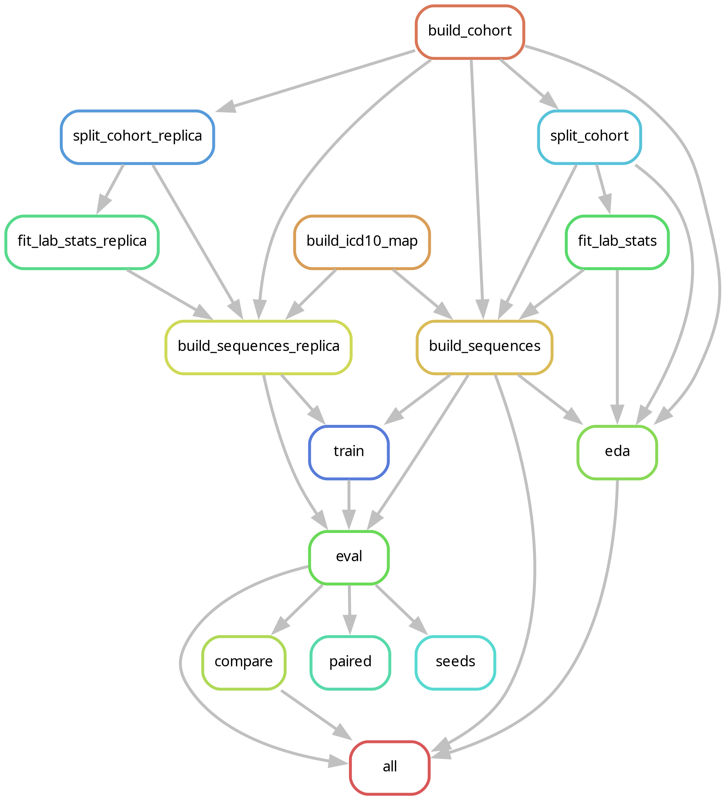
build_cohort a build_sequences se construyen los datos de la ejecución principal, y la rama con el sufijo _replica repite la partición, la normalización y las secuencias de cada réplica. eda es el análisis exploratorio, y train, eval y compare entrenan, evalúan y comparan los modelos. seeds resume la variabilidad entre réplicas, paired compara los modelos de forma emparejada y all es el objetivo final, que no ejecuta nada por sí mismo.
2.6.1 Las tres etapas del grafo
La primera etapa construye los datos. build_cohort genera la cohorte de cada pool a partir de los ficheros crudos, split_cohort reparte discovery en train y validación; fit_lab_stats calcula la media y la desviación de cada analítica solo con train y las guarda como artefacto independiente, de manera que validación y holdout se normalizan con esas mismas cifras, build_icd10_map reduce el mapa de SNOMED a ICD-10-CM; y build_sequences produce las secuencias de cada split.
La segunda etapa es el análisis exploratorio, una sola regla que caracteriza las secuencias de train y lee además las de validación y holdout para la tabla de la cohorte por split. Genera el resumen y las figuras que se comentan en el capítulo 4.
La tercera entrena, evalúa y compara. train ajusta un modelo por cada entrada del catálogo, eval calcula sus métricas en cada landmark y sobre los tres splits, y compare reúne los resultados en una tabla y en la figura principal. Cuando se lanzan las réplicas, seeds resume sus métricas por modelo y paired compara los modelos de cada réplica sobre los mismos pacientes.
Los artefactos que encadenan las etapas son la cohorte (cohort.parquet), las secuencias (sequences.pkl), las estadísticas de normalización (lab_stats.json), el mapa compacto de diagnósticos (snomed_to_icd10.json), los modelos (models/{nombre}.pkl), sus métricas (metrics/{nombre}.json) y la comparación final (comparison.csv).
La Figura 2 despliega el grafo de reglas en los trabajos concretos de la ejecución principal, veinte más el objetivo all. Es la forma más directa de comprobar que el diseño respeta la separación entre ajuste y evaluación, porque cada flecha corresponde a un fichero que un trabajo lee de otro.
2.6.2 Configuración declarativa: añadir un modelo es editar YAML
El catálogo de modelos se define en el fichero de configuración y no en el código. Cada entrada declara un nombre, la arquitectura (grud, lstm, cox o strats) y sus hiperparámetros, y las reglas de entrenamiento y evaluación se instancian automáticamente para cada nombre. Añadir un modelo consiste, por tanto, en añadir un bloque a la configuración, sin tocar las reglas. El estudio compara cinco entradas: grud, que incorpora los códigos de diagnóstico, grud_labs, solo con analíticas, cox, lstm y strats.
2.6.3 Entorno y ejecución
Los comandos de ejecución se definen también en el entorno, y el estudio se ejecutó completo en un servidor equipado con dos procesadores AMD EPYC 7513 (2 sockets, 32 núcleos por socket, para un total de 64 núcleos de procesamiento y 256 MiB de caché L3) y 1,0 TiB de memoria RAM instalada. Snakemake lanza las reglas sobre esa única máquina, con 60 núcleos asignados y un número fijo de hilos por trabajo (apartado 4.7). El entrenamiento corre en CPU, con las secuencias cargadas en memoria, de modo que ampliar la cohorte o añadir arquitecturas encarece el ciclo completo y los tiempos crecen con el número de modelos. A cambio, los cinco modelos se entrenaron y se evaluaron en el mismo entorno fijado y en las mismas condiciones, que es lo que hace comparables sus métricas.
Por su parte, el desarrollo y la depuración del flujo completo de trabajo se llevaron a cabo de forma local en un ordenador portátil equipado con un procesador Intel Core i7-1165G7 (4 núcleos, 8 hilos a 2,80 GHz) y 16 GB de memoria RAM.
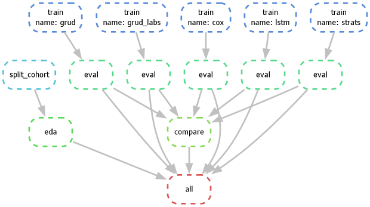
build_cohort se ejecuta una vez por pool y build_sequences una vez por split, y las normalizaciones de fit_lab_stats se calculan solo con train. train y eval se ejecutan una vez por cada una de las cinco entradas del catálogo, en paralelo una vez construidas las secuencias. Cada entrenamiento recibe únicamente las secuencias de train y de validación, y las de holdout solo llegan a eval y al análisis exploratorio, de modo que el conjunto de prueba no interviene en ningún ajuste. Las diez réplicas repiten la estructura desde split_cohort, con su propia partición, normalización y secuencias, y añaden 50 trabajos de train y 50 de eval que no se muestran.
3 Métodos
La reproducción del estudio requiere cinco componentes: el marco de supervivencia sobre el que se formula el problema, la representación de los datos, las arquitecturas entrenadas, el protocolo experimental y las métricas de evaluación. Cada una se describe en el orden en que el pipeline la ejecuta, de modo que el capítulo pueda seguirse en paralelo al código.
3.1 Marco de supervivencia
El estudio formula el cribado como un problema de tiempo hasta el evento, y este apartado fija el vocabulario que usan el resto del capítulo y el capítulo 5. Concretamente, qué se entiende por evento y por censura, cómo se estima la probabilidad de seguir en observación, qué añade el modelo de Cox y cómo se traduce todo a una probabilidad a cinco años en cada edad de corte.
3.1.1 Tiempo hasta evento, censura y riesgos competitivos
Los modelos de tiempo hasta el evento describen, para cada paciente, cuánto tarda en ocurrir un suceso y si llegó a ocurrir mientras se le observaba. El suceso se caracteriza con dos variables, el tiempo hasta el evento, \(T\), y un indicador que dice si el seguimiento terminó con el evento o no. La particularidad de este caso es que el evento objetivo no es la muerte, como en un modelo de supervivencia al uso, sino el primer diagnóstico de cáncer de pulmón. Por eso el seguimiento puede terminar de tres maneras, porque aparece el diagnóstico, porque el paciente fallece o porque se pierde su seguimiento.
Como solo se observa uno de los tres desenlaces, el tiempo registrado es el mínimo entre el instante del diagnóstico y el instante en que se deja de observar al paciente:
\[T_i = \min(T_i^{e}, C_i)\]
donde \(T_i^{e}\) es el tiempo hasta el diagnóstico y \(C_i\) el tiempo hasta el final del seguimiento por muerte o por pérdida. El indicador sigue el convenio habitual: vale uno cuando el mínimo lo marca el diagnóstico y cero en los otros dos casos.
La censura es el final del seguimiento sin que haya ocurrido el evento, ya sea por pérdida o por muerte. Con esta definición, un paciente censurado no es un paciente que no vaya a desarrollar el tumor, sino uno del que se deja de tener información a partir de un instante concreto. Puede diagnosticarse después, fuera de la ventana de observación. De ahí que la probabilidad de censura, \(G(t) = P(C > t)\), no sea un detalle accesorio, sino una magnitud que entra en la evaluación. Se estima con Kaplan-Meier sobre los tiempos de censura de train,
\[\hat{G}(t) = \prod_{s \le t} (1 - d_s / n_s)\]
con \(d_s\) censuras en el instante \(s\) y \(n_s\) pacientes aún en observación. El estimador se calcula sobre los tiempos de cada paciente, y en la evaluación se ajusta por separado en cada landmark con las filas de train de ese corte, de modo que cada edad tiene su propia referencia de censura. Un ejemplo ilustra su significado. Si a los diez años de seguimiento la mitad de la cohorte ya ha salido de la observación, la probabilidad de seguir en observación vale \(0,5\) y un evento observado a esa edad pesa el doble que uno observado al principio. Las métricas que dependen de ella ponderan a cada paciente por la inversa de esa probabilidad (apartado 3.6.3), de modo que un paciente con un seguimiento largo sin censura pesa más, porque representa también a los que se perdieron antes.
Un riesgo competitivo es un suceso que impide que ocurra el evento de interés. Aquí lo es la muerte por una causa ajena al cáncer de pulmón, porque un paciente que fallece sin diagnóstico no puede ser diagnosticado después, y su desenlace no es equivalente a una pérdida de seguimiento. La muerte por otras causas se trata formalmente como censura a la derecha. Por consiguiente, las probabilidades estimadas corresponden al riesgo de diagnóstico mientras el paciente permanezca con vida y en seguimiento, y no a la probabilidad acumulada de enfermar a lo largo de la vida.
3.1.2 El modelo de Cox y la verosimilitud parcial
El modelo de Cox supone que el riesgo de cada paciente es el producto de un riesgo basal común a toda la cohorte y de un factor exponencial que depende de sus covariables (Cox 1972):
\[h_i(t) = h_0(t) \cdot e^{\theta_i}\]
donde \(\theta_i\) es un predictor calculado sobre las covariables del paciente, lineal en el caso clásico y la salida de una red neuronal en las variantes profundas. El riesgo basal \(h_0(t)\) queda sin forma funcional impuesta. No se supone que crezca, que decrezca ni que siga una exponencial, y no se estiman parámetros que lo describan. Se deja libre y se estima después, de forma escalonada, con el estimador de Breslow. Por eso el modelo se llama semiparamétrico, porque la parte de las covariables es paramétrica y la del tiempo, no.
El interés de esta formulación está en que permite estimar \(\theta\) sin conocer \(h_0\). Si en un instante ocurre un evento, la probabilidad de que le ocurra al individuo \(i\) y no a otro del conjunto de pacientes aún en riesgo en ese instante, \(R(t_i)\), es:
\[\frac{h_i(t_i)}{\sum_{j \in R(t_i)} h_j(t_i)} = \frac{h_0(t_i) \, e^{\theta_i}}{\sum_{j \in R(t_i)} h_0(t_i) \, e^{\theta_j}} = \frac{e^{\theta_i}}{\sum_{j \in R(t_i)} e^{\theta_j}}\]
El primer paso sustituye cada riesgo por su forma multiplicativa y el segundo cancela el riesgo basal, que aparece como factor común en el numerador y en el denominador. Por ello no es necesario modelarlo. Multiplicando esa probabilidad sobre los instantes con evento se obtiene la verosimilitud parcial,
\[L_p(\theta) = \prod_{k} \frac{e^{\theta_{(k)}}}{\sum_{j \in R(t_{(k)})} e^{\theta_j}}\]
y tomando logaritmos y cambiando el signo, la función a minimizar:
\[\mathcal{L}(\theta) = -\ln L_p(\theta) = -\sum_{k} \left[ \theta_{(k)} - \ln \sum_{j \in R(t_{(k)})} e^{\theta_j} \right]\]
donde el sumatorio recorre los instantes \(k\) con evento y \(\theta_{(k)}\) es el predictor del paciente que lo sufre. La implementación ordena a los pacientes por duración descendente, del seguimiento más largo al más corto. Así, el conjunto de riesgo de un paciente es el tramo de la lista que va desde el principio hasta él, y el cálculo se resuelve con una suma acumulada. La lista es la del lote de 128 muestras y no la de toda la cohorte, de modo que el conjunto de riesgo de cada evento lo forman los pacientes del lote que seguían en observación en ese instante. Es la aproximación habitual cuando una red se entrena por minilotes (Kvamme, Borgan, y Scheel 2019), y supone que cada paso optimiza una verosimilitud parcial calculada sobre una muestra del conjunto de riesgo y no sobre el conjunto completo. La exponencial se evalúa restando antes el máximo de los predictores del lote, una precaución numérica que evita desbordamientos y que no cambia el resultado. Solo los pacientes con evento aportan a la suma, y los censurados entran únicamente en los conjuntos de riesgo de los demás.
La forma de la pérdida indica qué optimiza el modelo. Para cada evento compara su predictor con una media suavizada de los predictores de todos los que estaban en riesgo. El primer término favorece un predictor alto para el paciente diagnosticado y el logaritmo del sumatorio lo contrapone a los de los demás, de modo que el modelo aprende a dar más riesgo a quien se diagnostica antes. El resultado no es una probabilidad, porque la pérdida no cambia si se suma la misma constante a todos los predictores, y por eso el riesgo basal se cancela. Sin embargo, sí depende de cuánto supera un predictor a otro, y no solo de su orden. Un ejemplo sencillo lo ilustra. Si dos pacientes están en riesgo, con predictor \(a\) el que se diagnostica y \(b\) el otro, su contribución a la pérdida es \(\ln(1 + e^{b - a})\), que baja de forma continua a medida que crece la diferencia \(a - b\) y no solo cuando cambia de signo. La medida que solo depende del orden es el C-index del apartado 3.6.1. Esa diferencia de magnitud es la que el riesgo basal de Breslow convierte después en una probabilidad.
3.1.3 Riesgo basal de Breslow y probabilidad a horizonte
Para pasar del orden relativo a una probabilidad absoluta hace falta recuperar el riesgo basal, y el estimador de Breslow lo reconstruye a partir de los propios datos (Breslow 1974). La idea es repartir los eventos observados en cada instante entre los pacientes que estaban en riesgo, en proporción a su riesgo relativo. Si en el instante \(t_k\) hay \(d_k\) eventos y el conjunto de riesgo es \(R(t_k)\), a cada paciente le corresponde una fracción \(e^{\theta_j} / \sum_{l \in R(t_k)} e^{\theta_l}\) de esos eventos. Al dividir esa fracción por el factor relativo del paciente, \(e^{\theta_j}\), queda una cantidad común a todos, y sumándola sobre los instantes hasta \(t\) se obtiene el riesgo acumulado basal:
\[\hat{H}_0(t) = \sum_{t_k \le t} \frac{d_k}{\sum_{j \in R(t_k)} e^{\theta_j}}\]
donde \(d_k\) son los eventos observados en el instante \(t_k\). De él se deriva la probabilidad de supervivencia de cada paciente. El riesgo acumulado de un paciente concreto es el basal multiplicado por su factor relativo, \(H(t \mid x_i) = \hat{H}_0(t) \cdot e^{\theta_i}\), y la supervivencia es la exponencial negativa de ese riesgo acumulado:
\[S(t \mid x_i) = \exp(-\hat{H}_0(t) \cdot e^{\theta_i})\]
La probabilidad de diagnóstico dentro del horizonte es entonces \(1 - S(5 \mid x_i)\), con el tiempo medido desde el corte y el riesgo basal estimado en cada landmark sobre las filas de train de ese corte (\(5\) representa el horizone de predicción establecido para este trabajo).
El pipeline fija este riesgo basal solo con los datos de train y no lo recalcula nunca sobre validación ni sobre holdout, que es la misma precaución que se toma con la distribución de censura y evita que información del conjunto de prueba se filtre a la predicción. La versión nula del modelo, con todos los riesgos a cero, da la incidencia basal de train, que es la referencia contra la que se mide el índice de precisión en el apartado 3.6.4.
3.1.4 Landmarking: predicción a edad fija, ventana de cinco años y anidamiento de cohortes
El análisis se plantea como un problema de predicción en un instante concreto de la vida del paciente, no como una predicción única. El esquema es el del landmarking (Houwelingen 2007), y consta de cuatro pasos. Se fija una edad de corte, se selecciona a los pacientes que siguen vivos y libres del evento en esa edad, se recoge su historia clínica hasta ese momento y se predice el evento en una ventana futura fija.
En este trabajo la rejilla de cortes son 26 edades, de los 45 a los 70 años, y la ventana es de cinco años, ambos declarados en el fichero de configuración. El filtro de elegibilidad se aplica con el tiempo transcurrido desde el corte,
\[\tilde{T}_i = T_i - (t_{LM} - 18)\]
de manera que la muestra se descarta si ese tiempo no es positivo, y la historia que ve el modelo se recorta a las observaciones hasta el corte, inclusive. Un paciente que en el momento del corte ya había sufrido el evento, o que ya había salido del seguimiento, no entra en esa cohorte. El instante de predicción lo fija la edad y no el desenlace, y la historia se recorta del mismo modo para quienes desarrollarán el cáncer y para quienes no. Esta es la diferencia de fondo con los diseños de casos y controles que fijan el índice de los casos en la fecha del diagnóstico, en los que el modelo puede aprender el propio proceso diagnóstico en lugar del riesgo previo (Yuan et al. 2021).
Las cohortes de los distintos cortes comparten pacientes y están anidadas. Quien sigue en observación a los 70 años ya lo estaba a los 45, así que la cohorte de un landmark tardío es un subconjunto de la de uno temprano. En holdout, el corte de 45 años reúne 12 616 filas de paciente y landmark y el de 70 reúne 6 996, de modo que se retiene el 55,5 % y el tamaño decrece de forma monótona en los 26 cortes. En train el primer corte coincide con la cohorte del modelo, 9 917 pacientes, y el último baja a 5 458. Al sumar los 26 cortes de holdout se obtienen 258 685 filas sobre 12 616 pacientes únicos, es decir, cada paciente aparece en unos veinte cortes de media. Ese anidamiento es el problema que hay que resolver al agregar las métricas, y se trata en el apartado 3.6.6.
3.2 Descripción de la cohorte y de las secuencias
El estudio trabaja con dos objetos. La cohorte es un fichero con una fila por paciente y tres columnas (Id, duration y event), que define quién entra y cuándo termina su seguimiento. Las secuencias son la historia de cada paciente reconstruida como una serie de instantes con sus analíticas y sus diagnósticos.
3.2.1 Variables y estadísticos de la tabla de características
La tabla descriptiva de la cohorte se construye cruzando el artefacto de cohorte con el fichero crudo de pacientes, que aporta la fecha de nacimiento, la de muerte y el sexo, y se calcula una sola vez sobre train, validación y holdout. Las variables son seis: el número de pacientes y el de eventos se obtienen directamente de la cohorte. La tasa de evento es el cociente entre ambos. El seguimiento mediano es la mediana de duration, medida desde la fecha índice de los 18 años. La edad mediana al final del seguimiento es esa misma mediana más 18. El porcentaje de mujeres se obtiene del indicador de sexo que la secuencia guarda por paciente.
La tabla se acompaña de dos elementos más, a saber, el embudo de la muestra encadena la cohorte de discovery, el reparto en train y validación, las secuencias construidas, los pacientes con al menos un par válido y los pares paciente-landmark, de modo que cada cifra se lee como el resto de la anterior. La curva de incidencia acumulada por split se estima con Kaplan-Meier sobre los tiempos hasta el evento (discovery no lleva curva propia, porque es la unión de train y validación y duplicaría la figura).
3.2.2 Medidas de dispersión, co-ocurrencia y muestreo informativo
El análisis exploratorio se organiza en cuatro bloques, y cada uno responde a una pregunta distinta sobre los mismos datos.
- Lo que ve el modelo en cada corte. Por cada landmark se cuentan las muestras, cuántas no tienen ninguna analítica anterior al corte, la mediana y los cuantiles de analíticas y de códigos por muestra, y la mediana de instantes con registro. Es la única vista que responde a qué recibe la red.
- Densidad de observación. Se mide el número de analíticas por visita y la presencia de cada analítica en dos unidades distintas, el porcentaje de pacientes que la tienen alguna vez y el porcentaje de visitas que la incluyen. Se añade la intensidad por banda de edad, en observaciones por paciente y año, calculada como el solapamiento entre la ventana de cada paciente y la banda.
- Muestreo informativo. Para cada paciente se calcula la tasa de visitas con analítica por año de seguimiento, contando solo las que caen entre los 18 años y el final de su seguimiento. Las tasas de los pacientes con evento y sin evento se contrastan con una prueba de Mann-Whitney, y el tamaño del efecto se mide con la δ de Cliff, que vale P(X > Y) − P(X < Y), con X la tasa del grupo con evento e Y la del grupo sin evento. Vale cero cuando ninguna de las dos distribuciones domina a la otra y ±1 cuando todos los pacientes de un grupo se miden más que todos los del otro; los empates no cuentan en ninguno de los dos términos.
- Magnitudes y normalización. Por analítica se resume la distribución de los valores estandarizados observados y se contrasta con las medias y desviaciones que el pipeline guardó en train. Las analíticas que se salen de la tolerancia se marcan y no se corrigen.
El análisis se rige por dos criterios. El paciente es la unidad de inferencia, nunca el par ni el valor, porque un mismo paciente aparece hasta en 26 cortes y contar sobre la muestra del modelo multiplicaría cada observación. Por eso la densidad, el muestreo y las magnitudes se calculan sobre la historia completa, y la muestra del modelo se usa solo donde la pregunta es qué ve la red. El segundo criterio es que toda cifra se almacena en un artefacto con su unidad, su población y su denominador, y que cada figura muestra un solo mensaje.
3.3 Representación de los datos
La representación es la pieza que decide qué puede aprender cada modelo. Una misma historia clínica admite varias representaciones, y cada una impone sus supuestos sobre qué es un hueco, cuánto dura el pasado y cómo se codifica un diagnóstico. Este apartado describe cómo se construye la representación del estudio (Sección 3.3.1), las dos formas de leerla que usan los modelos (Sección 3.3.2) y el filtro que impide que el desenlace entre como variable (Sección 3.3.3).
3.3.1 Secuencias irregulares con códigos ICD-10-CM
La representación de partida se construye con una única regla que lee los tres ficheros crudos, patients.csv.gz, conditions.csv.gz y observations.csv.gz, y escribe por paciente cinco elementos, que son los instantes de la historia, la matriz de analíticas, su máscara de observación, el sexo y los códigos de diagnóstico.
Los instantes son la unión ordenada de las edades en que hay una analítica o un diagnóstico, de modo que la secuencia avanza de visita en visita y no sobre una rejilla de tiempo fijo. La matriz de analíticas tiene una fila por visita y una columna por cada una de las 23 analíticas fijadas, con el valor estandarizado en media y desviación. La máscara tiene la misma forma y marca qué se midió y qué no, y es lo que permite distinguir un valor ausente de un valor que casualmente vale cero. Los códigos de diagnóstico se guardan como una lista por visita, ya traducidos a categorías ICD-10-CM, tal como se describe en el capítulo 2.
La matriz se organiza como un tensor de tres dimensiones, lote, tiempo y variable, con una fila por visita y una columna por analítica. El eje temporal cuenta visitas y no años, y por eso los lotes se rellenan hasta la longitud máxima del lote en lugar de hasta una rejilla fija. Junto a la matriz viaja el intervalo desde la visita anterior, que se calcula como la diferencia entre instantes consecutivos y vale cero en la primera. Ese intervalo es el \(\delta_t\) con el que GRU-D decide cuánto decae cada valor entre una visita y la siguiente.
La estandarización usa la media y la desviación calculadas solo con train, y esas mismas cifras se reutilizan en validación y en holdout, para que ningún paciente del conjunto de prueba participe en la normalización. El vocabulario de códigos se fija igual, en train. Se ordenan alfabéticamente las categorías que aparecen, se les asigna un índice a partir del uno y se reserva el cero para el relleno. Son 119 categorías observadas en train, y esa es la cifra que manejan los modelos, no las 1 312 que el mapa permite.
3.3.2 Tripletas (t, f, v) frente a matriz densa
Los modelos recurrentes y el transformer reciben esta misma historia, pero la procesan de forma distinta, y esa diferencia da lugar a las dos representaciones de este apartado.
La representación densa es la de GRU-D y la LSTM. Cada visita ocupa una fila de la matriz, con sus 23 analíticas, su máscara de observación y un intervalo adicional, el tiempo transcurrido desde la visita anterior, que vale cero en la primera. Los lotes se rellenan a la longitud máxima del lote, con la dimensión temporal contando visitas y no años, de modo que cada paciente aporta tantas filas como visitas tiene.
La representación en tripletas es la de STraTS. Cada observación elemental se escribe como una terna \((t_i, f_i, v_i)\), el instante exacto, un identificador de variable y su valor respectivamente. El identificador unifica analíticas y diagnósticos en un mismo espacio, con las 23 analíticas en los primeros índices y los códigos desplazados a continuación, y el valor es el z-score de la analítica o un uno constante cuando la observación es un diagnóstico. La serie queda entonces como una secuencia ordenada de observaciones sueltas, sin rejilla común y sin necesidad de rellenar huecos.
Las dos máscaras comparten nombre, pero no función. La de la representación densa es una máscara de observación y por tanto dice qué variables se midieron en cada visita, y GRU-D la usa además para decidir qué imputar. La del transformer es una máscara de relleno, por lo que solo dice qué posiciones son artificiales porque el lote se ha igualado en longitud, y no lleva información clínica.
3.3.3 Fuga de información: eliminación de variables reveladoras
Un modelo que predice un diagnóstico no puede recibir como entrada el código de ese diagnóstico. El capítulo 2 ya describe los tres descartes que el pipeline aplica sobre los diagnósticos crudos antes de traducirlos a categorías (Sección 2.5). Aquí interesa su efecto sobre la representación, y ese efecto es que el vocabulario que llega al modelo no contiene ninguna categoría del desenlace. Como los cuatro conceptos SNOMED del evento se traducen a C34, el descarte de C33 y C34 los elimina aunque no se hubieran excluido por código, y las categorías que empiezan por O, Z, V, W, X o Y quedan fuera por el mismo filtro.
El filtro se ha comprobado sobre el vocabulario que queda. Ninguna categoría C33 ni C34 aparece, ninguno de los cuatro conceptos SNOMED que definen el evento está presente y no aparece ninguna de las iniciales excluidas.
3.4 Modelos
El estudio entrena cinco modelos que representan tres familias. La línea base es un modelo de Cox sobre una tabla estática, sin ninguna noción de secuencia. Dos son recurrentes, la LSTM y GRU-D, y la segunda se entrena en dos variantes, con y sin códigos de diagnóstico. El quinto es un transformer, STraTS, que trata la historia como un conjunto de observaciones sueltas. Todos producen un riesgo escalar por paciente y corte, que la verosimilitud parcial del apartado 3.1.2 ordena. Cada subsección sigue el mismo esquema, la idea, las ecuaciones que la definen y los parámetros que se entrenan, y los parámetros de los cinco se recogen juntos al final del apartado.
3.4.1 Línea base tabular: Cox con LOCF
La línea base del estudio es un modelo de Cox sobre una matriz tabular por landmark. Para cada corte se construye una matriz con una fila por paciente y una columna por variable, rellenando las analíticas con la última observación disponible hacia delante. Si una analítica no se ha medido nunca en ese paciente, se imputa con la mediana de train de esa columna. A esas 23 columnas se añade el sexo y, cuando la variante los usa, un indicador por cada categoría de diagnóstico presente en la historia hasta el corte, lo que deja 143 columnas de entrada.
El modelo es una capa lineal sobre ese vector, de modo que el predictor es \(\theta_i = x_i^{\top}\beta\) y el riesgo se obtiene aplicando la exponencial del apartado 3.1.2. Es la variante más simple de las cinco y sirve de referencia, porque mide cuánto se puede explicar con las últimas analíticas conocidas y el sexo, sin ninguna noción de secuencia ni de tiempo entre visitas.
La particularidad es que no hay un modelo, sino 26, ya que cada corte se ajusta por separado con sus propios pacientes y su propia matriz. Es el único del catálogo que se reentrena en cada corte, y por eso, aunque cada ajuste es computacionalmente económico, su entrenamiento completo dura lo mismo que el de las redes recurrentes, unos cinco minutos (apartado 4.7).
Cabe señalar que los modelos de Cox por landmarks con la última observación disponible de cada variable (LOCF, del inglés Last Observation Carried Forward), es una estrategia tradicional y de uso habitual para incorporar mediciones longitudinales a la predicción de supervivencia (Mirko y Retif 2026).
3.4.2 Procesamiento secuencial y RNN básicas
Una red neuronal recurrente (RNN, Recurrent Neural Network) procesa la historia visita a visita y mantiene un estado oculto que resume lo visto hasta el momento. La celda es siempre la misma y se aplica en cada paso, aunque al dibujarla se despliegue en el tiempo para ver el cálculo completo (Figura 3). Ese despliegue no es una red distinta, sino la misma celda repetida tantas veces como visitas tenga la historia.
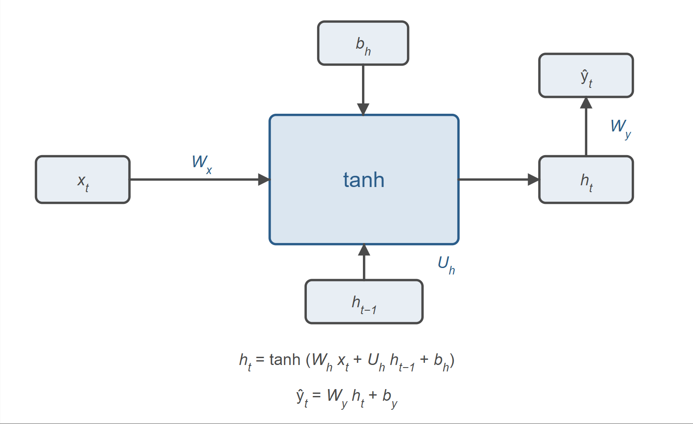
La Figura 4 muestra el despliegue temporal. En cada instante la celda recibe la entrada \(x_t\) y el estado anterior \(h_{t-1}\), y produce un estado nuevo. La salida puede tomarse en cada paso, si la tarea pide una predicción por visita, o solo en el último, si lo que se quiere es un resumen de toda la secuencia. Este estudio usa la segunda opción, porque el riesgo se calcula una vez por paciente y corte y no en cada visita. El entrenamiento se hace sobre el grafo desplegado, con retropropagación a través del tiempo.
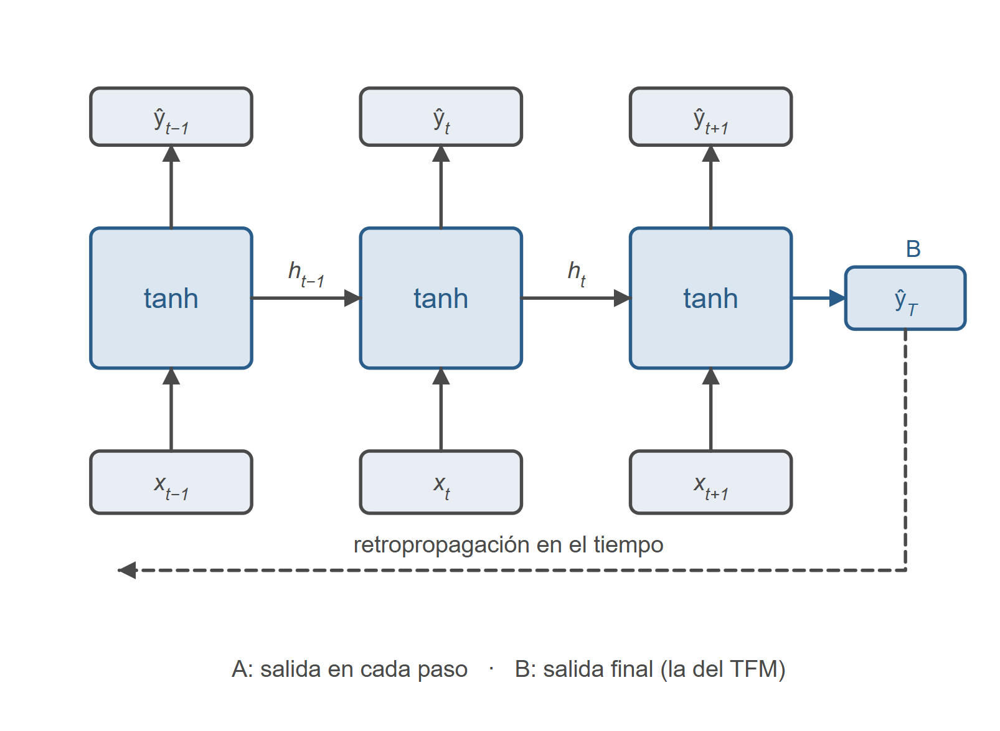
La celda más simple actualiza el estado con una tangente hiperbólica sobre la entrada actual y el estado anterior:
\[h_t = \tanh(W_h x_t + U_h h_{t-1} + b_h)\]
Los parámetros entrenables son las dos matrices y el sesgo, en total \(d_h(d_x + d_h + 1)\), que no dependen de la longitud de la secuencia porque la misma celda se reutiliza en cada paso. El problema de esta celda es que la señal se diluye a lo largo de la secuencia, porque el gradiente que llega desde el final hasta el principio se multiplica por tantos factores que tiende a desvanecerse, y la red pierde la información de los pasos más antiguos. De ahí surgen las dos celdas que sí usa el estudio, la LSTM y la GRU, y de ahí también que el transformer sea una alternativa razonable cuando la historia es larga.
En el catálogo del pipeline no hay ninguna red recurrente básica. Las dos celdas que resuelven el problema del olvido son las que se describen en las dos subsecciones siguientes, y este apartado es el marco que las introduce.
3.4.3 LSTM
La LSTM resuelve el problema del olvido con una memoria de celda separada del estado oculto y tres compuertas que deciden qué se guarda, qué se olvida y qué se transmite (Hochreiter y Schmidhuber 1997). La Figura 5 recoge la celda completa, donde la entrada \(x_t\) y el estado anterior \(h_{t-1}\) forman el vector conjunto que alimenta a las compuertas.
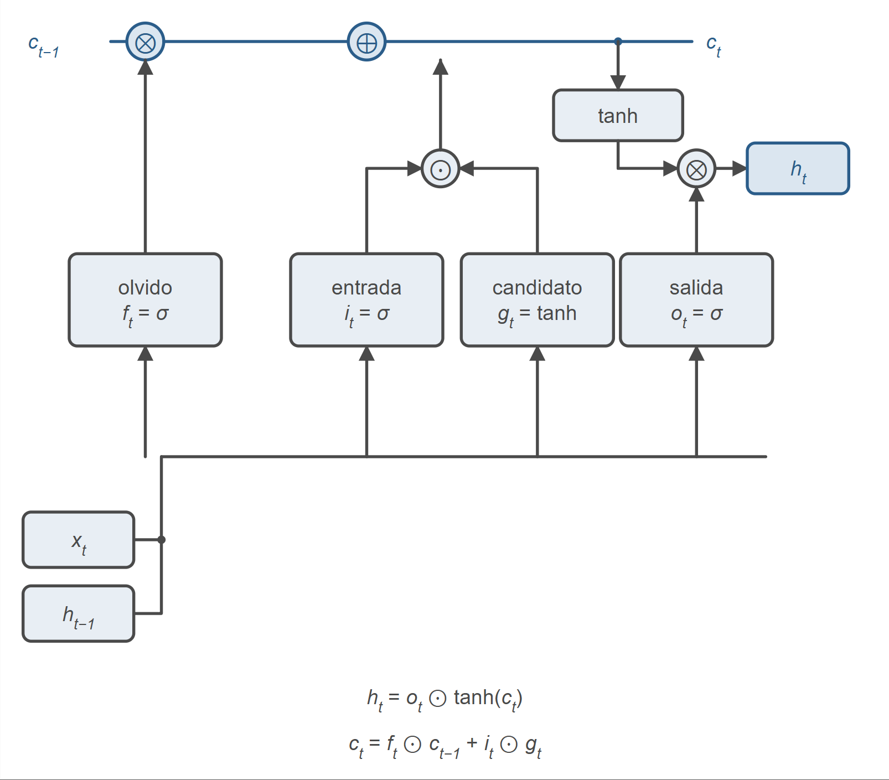
La compuerta de olvido y la de entrada actualizan la memoria,
\[C_t = f_t \odot C_{t-1} + i_t \odot \tilde{C}_t\]
y la compuerta de salida decide qué parte de esa memoria pasa al estado oculto,
\[h_t = o_t \odot \tanh(C_t)\]
con las tres compuertas calculadas como una sigmoide sobre el vector conjunto \([x_t, h_{t-1}]\), y el candidato \(\tilde{C}_t\) como una tangente hiperbólica. El camino de la memoria a través de la suma es lo que permite que el gradiente se propague a pasos lejanos sin desvanecerse.
En el pipeline la celda es una LSTM sobre un vector por visita que concatena las analíticas ya imputadas, la máscara de observación y el sexo, más un vector aprendido por categoría de diagnóstico cuando la variante los incorpora. La imputación es la media de train, sin decaimiento, porque la LSTM no usa el tiempo transcurrido entre visitas, y esa es su diferencia principal con GRU-D. El riesgo se toma del estado en la última visita real, no en el relleno, y una capa lineal lo convierte en el escalar que consume la pérdida de Cox.
3.4.4 GRU y GRU-D
La GRU es una versión reducida de la LSTM. En lugar de tres compuertas y una memoria aparte, usa dos compuertas y un único estado, con menos parámetros y un rendimiento parecido en la práctica. La Figura 6 muestra la celda, con la compuerta de reinicio modulando el estado anterior que entra al candidato y la de actualización gobernando la interpolación convexa hacia el nuevo estado.
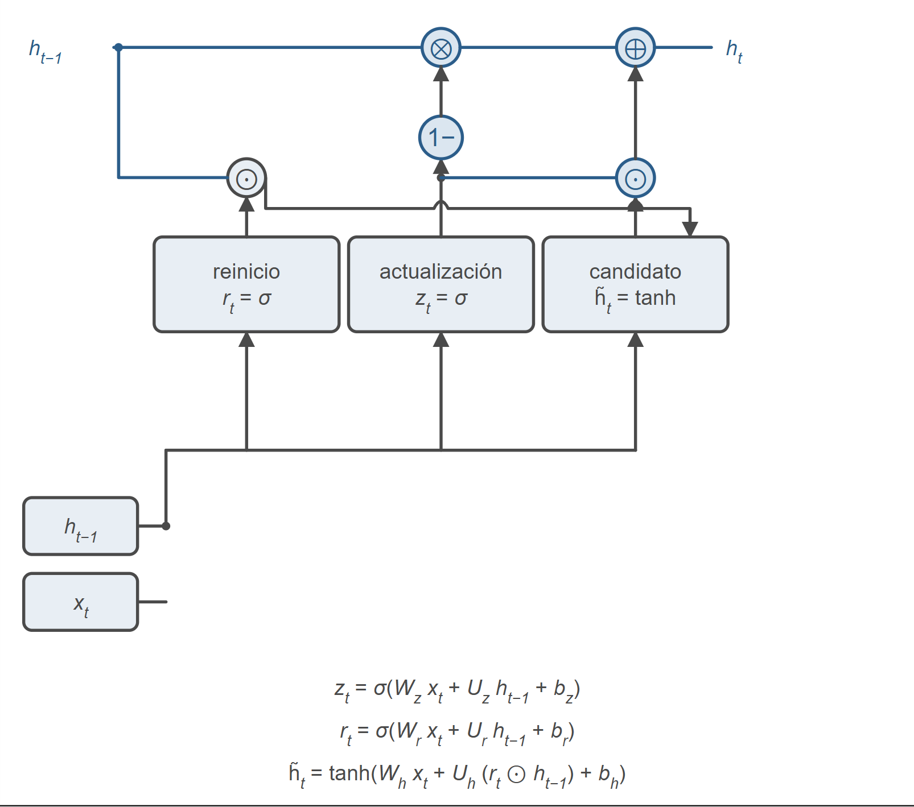
Sobre esa celda construyen Che et al. su modelo para series con valores ausentes, y esa es la variante que entrena el estudio (Che et al. 2018). La aportación de GRU-D es tratar el tiempo transcurrido como información. Cada analítica y el propio estado oculto decaen hacia su valor de referencia con una velocidad aprendida:
\[\gamma_x = \exp(-\max(0, W_x \delta_t + b_x))\]
donde \(\delta_t\) es el tiempo desde la visita anterior. En el artículo original el intervalo es propio de cada variable y cuenta desde su última medición. En el pipeline es uno solo, común a todas las analíticas, y una capa lineal lo convierte en una velocidad de decaimiento por analítica. Con ese decaimiento se imputa el valor ausente mezclando la última observación conocida de esa analítica, \(x_{t'}\), y la media de train, \(\bar{x}\),
\[\hat{x}_t = m_t x_t + (1 - m_t)(\gamma_x x_{t'} + (1 - \gamma_x) \bar{x})\]
y se atenúa el estado oculto antes de actualizarlo con un decaimiento análogo. Si entre dos visitas pasan tres años, el valor imputado se parece más a la media que si pasa una semana, y el grado de aproximación lo aprende el modelo con sus propios parámetros en lugar de fijarse a mano. Como el intervalo cuenta desde la visita anterior y no desde la última medición, una analítica que lleva años sin medirse pero con visitas intermedias frecuentes conserva un valor imputado cercano al último observado.
La celda recurrente recibe la concatenación de las analíticas imputadas, la máscara, el sexo y el tiempo desde la fecha índice (la edad menos 18 años), más el vector de códigos cuando los usa, y la cabeza de riesgo es la misma que en la LSTM. La adaptación respecto al artículo original está en cómo se introduce la máscara. En lugar de las matrices separadas para cada compuerta, el pipeline concatena la máscara a la entrada de una celda GRU estándar. Para la máscara el resultado es equivalente, porque multiplicar una concatenación por una matriz es lo mismo que sumar los productos de sus bloques. No es idéntico al original en otros dos detalles, porque la celda de PyTorch aplica la compuerta de reinicio después de multiplicar el estado anterior y no antes, y porque la entrada añade el tiempo desde la fecha índice, que Che et al. no usan. La variante sin códigos es la que sirve para la ablación del apartado 3.5.2.
3.4.5 STraTS: Transformer sobre tripletas de observación
STraTS es un transformer pensado para series clínicas dispersas e irregulares (Tipirneni y Reddy 2022). Su tarea original es clasificación, con una tarea auxiliar de predicción de valores observados que se entrena antes del ajuste fino. De esa propuesta se toma aquí la arquitectura, no el preentrenamiento. El modelo se entrena desde cero y solo con la pérdida de Cox, y el aprendizaje autosupervisado queda como línea futura en el capítulo 6. La razón es de alcance, porque aquí el objetivo no es reducir las etiquetas necesarias, sino comparar arquitecturas bajo un protocolo común. Según el propio artículo, la fase autosupervisada es la que permite a la arquitectura mantener su rendimiento con menos etiquetas, y esa ventaja queda sin explorar en esta memoria.
Esta adaptación es la aportación técnica central del trabajo. STraTS ya se ha aplicado al riesgo de cáncer de pulmón como clasificador a un año, con los códigos representados mediante embeddings de MedBERT (Rasmy et al. 2021), sin valores de analítica y sobre una muestra de casos y controles (Alonso et al. 2025). Aquí conserva la representación en tripletas con valores continuos, se entrena con la verosimilitud parcial de Cox, que incorpora la censura, y se integra en el esquema de landmarking. Produce así un riesgo por paciente y corte que el riesgo basal de Breslow convierte en una probabilidad a cinco años (apartado 3.1.3).
Antes de describir el modelo conviene recordar cómo funciona un transformer. Un transformer procesa toda la secuencia en paralelo, sin recorrerla en orden, y lo hace con un mecanismo de atención que relaciona cada elemento con todos los demás. La atención se construye con tres proyecciones lineales de cada elemento, la consulta, la clave y el valor, de modo que el peso entre dos posiciones se obtiene del producto escalar de la consulta de una con la clave de la otra, normalizado y pasado por una softmax (Figura 7). Cada posición obtiene así una combinación ponderada de los valores de todas las demás.
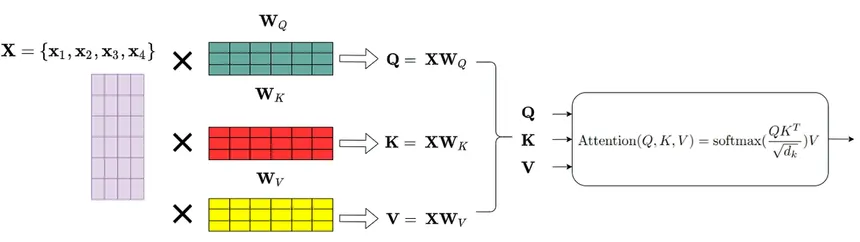
El mecanismo se repite en varias cabezas en paralelo, cada una con sus propias proyecciones, y el resultado se concatena. Así, cada cabeza puede especializarse en un tipo de relación distinta. Después, el bloque del codificador añade una conexión residual y una normalización, y una capa densa con su propia residual (bloque contextual en Figura 8). Ambos elementos facilitan el entrenamiento de una red de este tipo, porque mantienen el gradiente en un camino directo a través de las capas.
En el caso de las series clínicas, el transformer no necesita codificación posicional como la de un texto, porque cada observación incluye su instante real y ese instante se usa como una entrada más. El modelo trabaja sobre las tripletas del apartado 3.3.2 y construye cada una como la suma de tres piezas, el instante, la variable y el valor, cada una proyectada a la dimensión interna del modelo. El instante y el valor pasan por una red de dos capas con una tangente hiperbólica en medio, que es lo que permite tratar un tiempo o un valor continuo como un vector. La variable se representa con un vector aprendido por identificador. Cuando la observación es un diagnóstico, la contribución del valor se anula, de modo que la representación del código es íntegramente la de la variable y el uno constante no introduce ninguna falsa noción de magnitud.
Sobre esas representaciones actúa un codificador de dos capas con cuatro cabezas de atención, que relaciona cada observación con todas las demás sin recorrer la secuencia en orden. La máscara de relleno impide que las posiciones artificiales participen en la atención. Después, la secuencia se resume con una atención aprendida (Fusion Self-Attention), en la que cada observación recibe un peso \(\alpha_i\) proporcional a su relevancia y el resumen es la suma ponderada,
\[e^T = \sum_i \alpha_i h_i\]
El riesgo se calcula combinando ese resumen temporal \(e^T\) con la información demográfica. El vector de demográficas \(d\) (en este estudio, el sexo del paciente) pasa por una red densa (feed-forward, FFN) con activación tangente hiperbólica para obtener una representación latente \(e^d\). Ambos vectores se concatenan en \(\begin{bmatrix} e^d \\ e^T \end{bmatrix}\) y alimentan la cabeza de Cox (Figura 8), que devuelve una única salida escalar de riesgo \(\hat{y}\) por muestra. No devuelve riesgos intermedios, porque el transformer procesa la secuencia entera en paralelo y no tiene pasos temporales recurrentes.
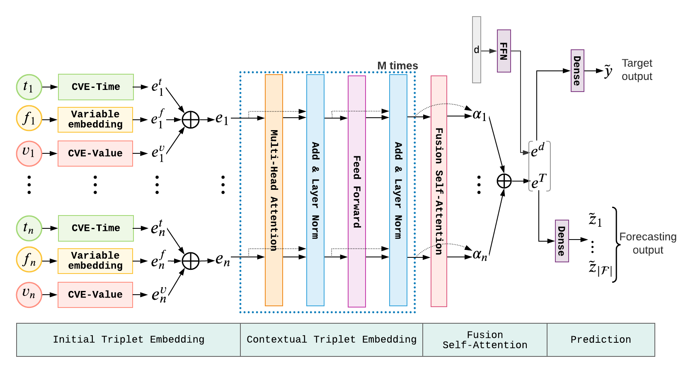
La Tabla 6 recoge el tamaño de los cinco modelos. La cifra de Cox es por landmark, porque se ajusta uno en cada corte, y las demás son el total del modelo.
| Modelo | Familia | Parámetros entrenables |
|---|---|---|
cox |
Lineal sobre tabla | 144 por landmark, 3 744 en los 26 cortes |
lstm |
Recurrente (LSTM) | 12 449 |
grud |
Recurrente (GRU-D con códigos) | 11 471 |
grud_labs |
Recurrente (GRU-D sin códigos) | 8 015 |
strats |
Transformer | 23 149 |
3.5 Protocolo experimental
Los cinco modelos compiten con el mismo presupuesto y sobre las mismas particiones. Las diferencias de configuración se limitan a lo que exige cada arquitectura (las épocas y la paciencia de la línea base, que además no tiene dimensión oculta, y el decaimiento de pesos del transformer), y el fichero de configuración define una única combinación por arquitectura para mantener un presupuesto de cómputo uniforme y reproducible entre modelos (apartado 4.7).
3.5.1 Partición por paciente, sobremuestreo de eventos y parada temprana
La partición se hace a nivel de paciente y estratificada por evento, con un 80 % para train y un 20 % para validación, sobre el pool discovery y con semilla fija. holdout no se reparte, porque es una población generada aparte que no entra en el ajuste en ningún momento. El reparto busca que la tasa de evento sea la misma en los dos conjuntos, porque con una prevalencia del 3,6 % una partición al azar desequilibrada cambiaría el punto de partida de los modelos.
Aun así, la prevalencia es baja, y para que el entrenamiento no se limite a aprender la clase mayoritaria se usa un muestreador que da tres veces más peso a los pacientes con evento. Es un sobremuestreo con reemplazamiento, no una reponderación de la pérdida, y el factor es el mismo para los cinco modelos.
La parada temprana vigila la pérdida de validación con un umbral de mejora de \(10^{-4}\) y guarda el mejor estado del modelo. Cada arquitectura lleva su propia paciencia. El optimizador es Adam, con el decaimiento de pesos de la configuración y un planificador que reduce la tasa de aprendizaje a la mitad cuando la pérdida de validación se estanca durante tres épocas.
3.5.2 Ablación de códigos ICD-10-CM
La única ablación del estudio compara las dos variantes de GRU-D, la que recibe los códigos de diagnóstico junto a las analíticas y la que solo usa analíticas. Las dos comparten arquitectura, hiperparámetros y particiones, y se diferencian únicamente en la dimensión del vector de códigos, que se anula en la segunda. Los instantes de la secuencia, en cambio, son los mismos en las dos, y siguen incluyendo las fechas con diagnóstico. La variante sin códigos sabe cuándo hubo un diagnóstico, cuántos hubo y cuánto tiempo pasó entre ellos, aunque no sepa cuál fue. La comparación mide, por tanto, qué aporta la identidad de los códigos con todo lo demás fijo, no qué aportan los diagnósticos, y sus resultados están en el apartado 4.6.
3.5.3 Presupuesto de entrenamiento e hiperparámetros
La Tabla 7 recoge la configuración de los cinco modelos. Las filas que coinciden en todas las columnas son el presupuesto común, y las que no se explican por las exigencias de cada arquitectura.
| Hiperparámetro | cox |
lstm |
grud |
grud_labs |
strats |
|---|---|---|---|---|---|
| Tamaño de lote | 128 | 128 | 128 | 128 | 128 |
| Tasa de aprendizaje | 0,001 | 0,001 | 0,001 | 0,001 | 0,001 |
| Decaimiento de pesos | 0,01 | 0,01 | 0,01 | 0,01 | 0,0001 |
| Épocas máximas | 100 | 20 | 20 | 20 | 20 |
| Paciencia de parada | 20 | 3 | 3 | 3 | 3 |
| Sobremuestreo de eventos | 3,0 | 3,0 | 3,0 | 3,0 | 3,0 |
| Longitud máxima de historia (posiciones) | 200 | 200 | 200 | 200 | 200 |
| Dimensión oculta | no aplica | 32 | 32 | 32 | 32 |
| Cabezas de atención | no aplica | no aplica | no aplica | no aplica | 4 |
| Capas de atención | no aplica | no aplica | no aplica | no aplica | 2 |
| Dimensión de la capa densa | no aplica | no aplica | no aplica | no aplica | 64 |
| Códigos de diagnóstico | sí | sí | sí | no | sí |
Las tres diferencias responden a motivos concretos. Cox lleva más épocas y más paciencia porque es un modelo lineal con pocos parámetros por corte y no necesita la contención de recursis que exigen las redes. Cada ajuste es rápido, y los 26 cortes juntos suman unos cinco minutos de entrenamiento (apartado 4.7). El decaimiento de pesos es una penalización sobre la magnitud de los pesos que se suma a la pérdida y los empuja hacia cero, de modo que el modelo no sobreajuste los datos de entrenamiento. En el transformer es cien veces menor que en las redes recurrentes, y el resto de sus valores son propios de la arquitectura (número de cabezas, capas y dimensión de la capa densa). La línea base no tiene dimensión oculta porque no tiene capa recurrente.
3.5.4 Réplicas con distintas particiones y semillas
Un único entrenamiento no basta para comparar arquitecturas, porque su resultado depende de dos fuentes de azar que el bootstrap del conjunto de evaluación no recoge: qué pacientes de discovery caen en train y en validación, y la semilla del entrenamiento. Para medir las dos, el estudio repite el procedimiento completo de construcción de los modelos, que es lo que debe validarse y no un ajuste concreto (Steyerberg y Harrell 2016). Cada réplica \(r\) reparte discovery en train y validación con la semilla \(r\), ajusta con ese train la normalización de las analíticas, construye sus secuencias, holdout incluido, y entrena los cinco modelos con la misma semilla, que fija la inicialización de los pesos, las extracciones del muestreador que sobrepondera los eventos y, en los modelos que lo usan, el dropout. La ejecución principal es la réplica 0, cuya partición es la del capítulo 2, y sus cifras son las de las tablas principales del capítulo 4. Con las réplicas 1 a 10, cada modelo suma once ejecuciones. holdout es el mismo en todas, y todas se evalúan con el procedimiento del apartado 3.6.
La variabilidad de cada modelo se resume con la media, la desviación típica y el rango de cada estimando agrupado entre las once ejecuciones, y se compara con el error estándar del bootstrap de cada ejecución, aproximado como la anchura de su intervalo dividida entre \(2 \times 1,96\).
Para comparar modelos, la réplica es la unidad de emparejamiento. Los cinco modelos de una réplica comparten partición y se evalúan sobre los mismos pacientes de holdout, de modo que su diferencia no arrastra el ruido de la muestra que comparten. El intervalo de cada diferencia se obtiene con un bootstrap de dos niveles. En cada iteración se sortea una de las once réplicas y se remuestrean los pacientes de holdout con el cluster bootstrap del apartado 3.6.6, y sobre esa pseudopoblación se calculan los estimandos agrupados de todos los modelos de esa réplica. Con 200 iteraciones, los percentiles \(2,5\) y \(97,5\) de las diferencias forman un intervalo que recoge a la vez la variación de partición y entrenamiento y la del conjunto de evaluación. Es la extensión a varias réplicas de la comparación de índices de concordancia correlacionados, calculados sobre los mismos pacientes (Kang et al. 2015), y evita la fragilidad de las comparaciones con un único entrenamiento, en las que la variación entre particiones y semillas puede igualar a la que se atribuye a la arquitectura (Bouthillier et al. 2021). Los resultados están en el apartado 4.8.
3.6 Evaluación
Cada modelo se evalúa con las mismas cinco métricas, sobre los mismos cortes y con los mismos datos de referencia. Este apartado define qué mide cada una y por qué se usan las cinco: tres evalúan el orden, una el error de la probabilidad y otra lo compara con el modelo nulo, y cada una deja fuera algo que las demás cubren. Todas se calculan sobre la cohorte completa de cada corte, con la prevalencia que produce el generador, y no sobre una muestra de casos y controles, en la que el AUPRC, la eficiencia de cribado y cualquier recalibración dependerían de la proporción de casos fijada por el diseño.
3.6.1 Discriminación: el C-index de Harrell y su falta de horizonte
El C-index de Harrell mide la proporción de parejas de pacientes en las que el modelo ordena correctamente el riesgo, es decir, en las que asigna más riesgo al que sufre el evento antes (Harrell, Lee, y Mark 1996). La implementación cuenta tres tipos de parejas. Las concordantes son aquellas en que el orden del riesgo coincide con el del tiempo, las discordantes son las que lo invierten, y las empatadas son aquellas en que los dos riesgos son iguales, con una tolerancia numérica configurable que decide cuándo dos riesgos distintos cuentan como empate. Con esos tres conteos,
\[C = \frac{n_c + \tfrac{1}{2} n_t}{n_c + n_d + n_t}\]
donde el factor un medio refleja que una pareja empatada no se considera concordante ni discordante. Vale \(0,5\) cuando el modelo ordena al azar y \(1\) cuando ordena a todos por su tiempo real.
Su limitación, que se discute en el capítulo 5, es que no considera la ventana de predicción. Un modelo que distinga bien entre un evento a un año y otro a veinte obtiene un C-index alto aunque, en el horizonte de cinco años que aquí interesa, apenas separe a quien va a enfermar de quien no. Es una medida del orden global a lo largo de todo el seguimiento, no de la utilidad a cinco años. A ello se suma que el estimador descarta las parejas en que uno de los dos está censurado antes del evento del otro, sin reponderarlas, lo que hace que su valor dependa de la distribución de la censura y no solo del modelo (Uno et al. 2011). Ambas limitaciones motivan las métricas siguientes.
La implementación usa la versión censurada de la biblioteca de supervivencia y guarda, además del valor, el número de parejas concordantes, discordantes y empatadas, que es lo que permite agregar después sin volver a emparejar.
3.6.2 AUROC dependiente del tiempo a cinco años
El AUROC dependiente del tiempo (time-dependent AUROC) mide la capacidad de separar a los pacientes que sufren el evento dentro del horizonte de los que siguen libres al terminarlo (Blanche, Dartigues, y Jacqmin-Gadda 2013). Los casos son los diagnósticos ocurridos antes de los cinco años y los controles son los pacientes aún libres en ese instante. Los censurados antes del horizonte no cuentan ni como casos ni como controles, porque no se sabe en qué lado habrían quedado, y su ausencia se compensa ponderando a los que sí cuentan. Formalmente es una proporción de parejas caso-control, ponderadas por la inversa de la probabilidad de censura:
\[\mathrm{AUC}(t) = \frac{\sum_{i} \sum_{j} w_i w_j \, \mathbb{1}[\hat{r}_i > \hat{r}_j] \, \mathbb{1}[T_i \le t < T_j]}{\sum_{i} \sum_{j} w_i w_j \, \mathbb{1}[T_i \le t < T_j]}\]
donde el numerador cuenta las parejas bien ordenadas y el denominador todas las comparables, con \(w_i = 1/\hat{G}(T_i)\) para los casos y \(w_j = 1/\hat{G}(t)\) para los controles.
En el pipeline se calcula en un único instante, el horizonte de cinco años, con lo que se obtiene una cifra por corte comparable entre landmarks y alineada con lo que el modelo pretende hacer. Por esta razón, y por simplicidad en la notación a lo largo de toda la memoria, las menciones a AUROC corresponden siempre a este estimador dependiente del tiempo evaluado a cinco años. La implementación espera un riesgo, con el valor alto indicando más riesgo. Intercambiar el signo invierte la métrica y devuelve valores por debajo de \(0,5\).
3.6.3 Ponderación IPCW y el C-index de Uno
La ponderación por la inversa de la probabilidad de censura es el mecanismo que permite usar los datos de los censurados sin sesgo. En el C-index de Uno solo cuentan las parejas comparables, aquellas en que el paciente \(i\) tiene el evento (\(\delta_i = 1\)) antes del tiempo observado del paciente \(j\) (\(T_i < T_j\)), y cada una se pondera por el inverso del cuadrado de la probabilidad de seguir en observación en el instante del evento,
\[w_{ij} = \frac{1}{\hat{G}(T_i)^2}\]
de modo que un evento ocurrido tarde, cuando ya se ha perdido a buena parte de la cohorte, cuenta más que uno ocurrido pronto, porque representa también a las parejas que la censura ha impedido observar. El C-index de Uno es el de Harrell con esa corrección (Uno et al. 2011), y estima una cantidad que no depende de la censura siempre que esta sea independiente de las covariables. Con el peso, el índice es el mismo cociente del apartado 3.6.1, sumando las parejas ponderadas:
\[C_w = \frac{\sum_{i \neq j} w_{ij} \, \kappa_{ij} \left( c_{ij} + \tfrac{1}{2} e_{ij} \right)}{\sum_{i \neq j} w_{ij} \, \kappa_{ij}}\]
donde \(\kappa_{ij}\) vale uno cuando la pareja es comparable, y \(c_{ij}\) y \(e_{ij}\) valen uno cuando, además, el paciente con el evento recibe más riesgo o los dos riesgos empatan, respectivamente.
El artículo original limita las parejas a eventos anteriores a un instante \(\tau\) en el que \(\hat{G}\) todavía es estable, porque en la cola de la distribución \(\hat{G}\) se hace pequeña y los pesos crecen sin control. El pipeline no aplica ese límite, y con seguimientos de hasta cincuenta años desde el corte de 45 algunos eventos tardíos reciben pesos grandes.
La distribución de censura \(G(t)\) se estima, como se dijo en el apartado 3.1.1, con Kaplan-Meier sobre los tiempos de censura de train de cada landmark, y no se recalcula nunca sobre validación ni sobre holdout.
La función de la biblioteca que calcula este C-index devuelve los conteos sin ponderar, idénticos a los del C-index de Harrell. Agrupar los 26 landmarks sumando esos conteos daría exactamente el C-index de Harrell agrupado, no el de Uno. Por eso el valor agrupado se calcula como media ponderada por el número de parejas comparables de cada corte, y se declara explícitamente como aproximación al estimador estratificado, en lugar de presentarse como el estimador exacto.
3.6.4 Brier IPCW e IPA frente al modelo nulo
El Brier IPCW es el error cuadrático medio de la probabilidad predicha, con la misma reponderación por censura (Graf et al. 1999; Gerds y Schumacher 2006):
\[\mathrm{BS}(t) = \frac{1}{n} \sum_i w_i(t) \cdot \left( \mathbb{1}[T_i > t] - \hat{S}(t \mid x_i) \right)^2\]
donde el peso corrige la censura con la regla de Graf. Un paciente con el evento antes de \(t\) pesa \(1/\hat{G}(T_i)\), uno que sigue libre en \(t\) pesa \(1/\hat{G}(t)\), y uno censurado antes de \(t\) pesa cero, porque no se sabe en qué lado del horizonte habría quedado:
\[w_i(t) = \frac{\mathbb{1}[T_i \le t, \, \delta_i = 1]}{\hat{G}(T_i)} + \frac{\mathbb{1}[T_i > t]}{\hat{G}(t)}\]
Toma valores entre cero y uno y, a diferencia de las anteriores, un valor menor indica un mejor rendimiento. Requiere probabilidades de supervivencia, no riesgos, y por eso se calcula con la supervivencia derivada del riesgo basal de Breslow del apartado 3.1.3 en lugar del orden que produce el modelo.
El valor absoluto de esta métrica no es interpretable de forma aislada. La incidencia a cinco años no llega al \(2\) % en ningún corte, y un modelo que prediga para todos la misma incidencia \(p\) obtiene un Brier cercano a \(p(1 - p)\), que con estas cifras ya es muy bajo. Una cifra de \(0,008\) no indica por sí sola si el modelo es útil. Su interpretación requiere una referencia, que es el modelo nulo: el mismo cálculo con el riesgo basal reestimado en train con todos los riesgos a cero, que equivale a la incidencia basal sin covariables.
El índice de precisión compara ambos valores (Kattan y Gerds 2018):
\[\mathrm{IPA} = 1 - \frac{\mathrm{BS}_{\text{modelo}}}{\mathrm{BS}_{\text{nulo}}}\]
Vale cero cuando el modelo no aporta nada sobre la incidencia basal y es negativo cuando predice peor que no usar ninguna covariable. En la agregación, el índice se calcula como cociente de los Brier agrupados, no como media de los índices por landmark, porque el segundo procedimiento da un valor distinto y menos interpretable.
3.6.5 Intervalos de confianza por bootstrap a nivel de paciente
Todas las métricas se acompañan de un intervalo de confianza al \(95\) % obtenido por remuestreo con reemplazamiento. El remuestreo se hace sobre pacientes. Dentro de un landmark cada paciente aporta una sola fila, así que remuestrear filas o pacientes daría lo mismo. La diferencia aparece al agregar, donde cada paciente tiene unas veinte filas repartidas por los cortes, y en ese caso sortear filas rompería esa correspondencia. El procedimiento sortea identificadores de paciente, recupera en bloque todas sus filas y calcula la métrica sobre esa pseudopoblación.
Los intervalos son los percentiles \(2,5\) y \(97,5\) de la distribución de las réplicas. Es el método del percentil, que no supone normalidad. Sus límites llevan además un error de Monte Carlo, que baja al aumentar el número de réplicas. Con \(200\) réplicas por landmark, cada extremo del intervalo lo fijan las cinco réplicas más extremas, así que los límites pueden moverse algunas milésimas si se repite el remuestreo con otra semilla. No se aumentó por su coste, porque cada réplica evalúa un corte completo. Las referencias que se fijan en train, la distribución de censura y el riesgo basal, no se remuestrean en ninguna réplica, de modo que el intervalo mide la incertidumbre del conjunto de evaluación y no la de los datos de ajuste.
Conviene precisar un aspecto de la lectura. Cada réplica sortea tantos pacientes como tiene la cohorte, de modo que algunos aparecen varias veces y, en promedio, una fracción \((1 - 1/n)^n \approx 1/e\), cerca del \(37\) %, no aparece en esa réplica concreta. No supone descartar a nadie, porque cada paciente entra en cerca del \(63\) % de las réplicas.
3.6.6 Agregación sobre landmarks anidados: estimando agrupado y cluster bootstrap
Agregar los 26 cortes en una sola cifra por modelo tiene un problema que no es aritmético, sino estadístico. Como se vio en el apartado 3.1.4, las cohortes de los distintos landmarks comparten pacientes. En holdout, 258 685 filas corresponden a 12 616 pacientes, unos veinte cortes por paciente. Las filas no son independientes, y promediar los 26 resultados como si lo fueran daría una cifra razonable pero un intervalo de confianza falso, más estrecho de lo que permite la evidencia.
La solución tiene dos partes. Para el valor agrupado, cada métrica se combina con la aritmética que le corresponde. El C-index de Harrell suma las parejas de todos los cortes y divide una sola vez, el Brier es una media ponderada por el número de pacientes de cada corte y el índice de precisión es el cociente de los Brier agrupados. El AUROC y el C-index de Uno se agregan también como media ponderada, y quedan declarados como aproximación por la razón explicada en 3.6.3. En ningún caso se comparan pacientes de cortes distintos entre sí.
Para el intervalo, el remuestreo se hace una sola vez sobre la cohorte de pacientes y se incluyen en bloque todas sus filas de todos sus cortes. Así, cada réplica reconstruye una pseudopoblación coherente en la que el paciente sigue apareciendo en los mismos veinte cortes, se evalúan los 26 landmarks sobre ella y se combinan con la misma aritmética, lo que produce un único valor agrupado por réplica. Con \(100\) réplicas se obtienen los percentiles que forman el intervalo, aunque con ese número cada extremo descansa en dos o tres réplicas y su error de Monte Carlo es mayor que el de los intervalos por landmark. La alternativa, remuestrear cada landmark por separado, rompería la dependencia entre cortes y estrecharía el intervalo.
4 Resultados
Este capítulo presenta los resultados de los cinco modelos sobre la cohorte, sin interpretarlos; la interpretación se aborda en el capítulo siguiente. Salvo donde se indique lo contrario, todas las cifras son del pool holdout, que no participó en el ajuste ni en la selección de modelos.
4.1 Características de la cohorte
La Tabla 8 resume la cohorte con la que se trabaja en cada split. Los tres conjuntos proceden del mismo generador y el reparto de discovery es estratificado por evento, de modo que la tasa de diagnóstico es casi idéntica en train y en validación (3,57 % y 3,58 %) y ligeramente superior en holdout (4,03 %), que es una población generada aparte y no una partición de la anterior.
| Característica | train | validación | holdout |
|---|---|---|---|
| Pacientes | 12 069 | 3 018 | 15 346 |
| Eventos observados | 431 | 108 | 618 |
| Tasa de evento | 3,57 % | 3,58 % | 4,03 % |
| Seguimiento mediano desde edad índice (años) | 49,1 | 48,5 | 49,3 |
| Edad mediana al final del seguimiento (años) | 67,1 | 66,5 | 67,3 |
| Mujeres | 46,4 % | 47,3 % | 46,8 % |
Una mediana de seguimiento de 49 años medida desde los 18 sitúa el final del seguimiento en torno a los 67 años de edad, por lo que la cohorte cubre la vida adulta completa de cada paciente y no una ventana de pocos años. La proporción de mujeres queda cerca de la mitad en los tres conjuntos, por lo que un desequilibrio por sexo no puede explicar las diferencias que se observan después.
La Figura 9 recoge la incidencia acumulada de diagnóstico por split, con su intervalo al 95 %, sobre la ventana de landmarks. La curva crece con la edad, holdout queda por encima de train y validación en toda la ventana, y el intervalo se ensancha en los cortes finales.
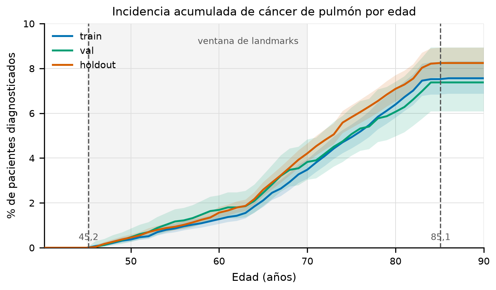
4.2 Caracterización de las secuencias
El análisis exploratorio describe los datos antes de que ningún modelo los use. Se apoya en un artefacto único que declara su procedencia, su versión de esquema y los hashes de sus entradas, y distingue tres vistas de la historia, la completa, la truncada en el corte y la muestra que consume el modelo. Esa distinción importa porque un mismo paciente aparece hasta en 26 cortes, y contar visitas sobre la muestra del modelo multiplicaría hasta por 26 cada observación. Las cifras de este apartado proceden de train.
4.2.1 Lo que ve el modelo en cada corte
La Figura 10 (a) muestra tres magnitudes que varían con la edad del corte: el número de muestras, la proporción de ellas sin ninguna analítica previa y el número de magnitudes que recibe el modelo cuando hay datos. El resultado principal es que la información que recibe el modelo consiste sobre todo en diagnósticos.
El filtro de landmarks, descrito en el capítulo 3, descarta las muestras cuyo seguimiento ha terminado antes del corte. Una muestra sin ninguna observación previa no se descarta, sino que entra con un único paso vacío en la edad del corte. De los 12 069 pacientes de train, 9 917 tienen al menos un par válido, lo que produce 202 672 filas sobre los 26 puntos de corte. De ellas, 160 233 (el 79,06 %) no tienen ninguna analítica anterior al corte, y la mediana de analíticas por muestra es cero en los 26 cortes. La mediana de códigos de diagnóstico es 3 y el percentil 90 es 8.
La cobertura depende de la edad. La proporción de muestras sin analítica baja del 85,44 % en el corte de 45 años al 67,99 % en el de 70, y la mediana de instantes con registro sube de 2 a 5. Cuando el paciente tiene analíticas, su número es elevado: la mediana condicional es de 45 mediciones en el corte de 45 años y de 64 en el de 70. La muestra efectiva es, por tanto, una mezcla de pacientes con mucha historia y de pacientes sin ninguna, y esa mezcla cambia con el corte.
4.2.2 Muestreo informativo
La Figura 10 (b) compara la frecuencia de medición de los pacientes según su desenlace. Para cada uno de los 9 917 pacientes del modelo se calcula la tasa de visitas con analítica por año de seguimiento, contando solo las que caen dentro de la ventana que va de los 18 años al final del seguimiento de cada paciente. La mediana es de 0,256 visitas al año en los pacientes sin evento y de 0,192 en los que lo desarrollan, con un contraste de Mann-Whitney de p = 1,1 × 10⁻²¹ y un δ de Cliff de −0,272.
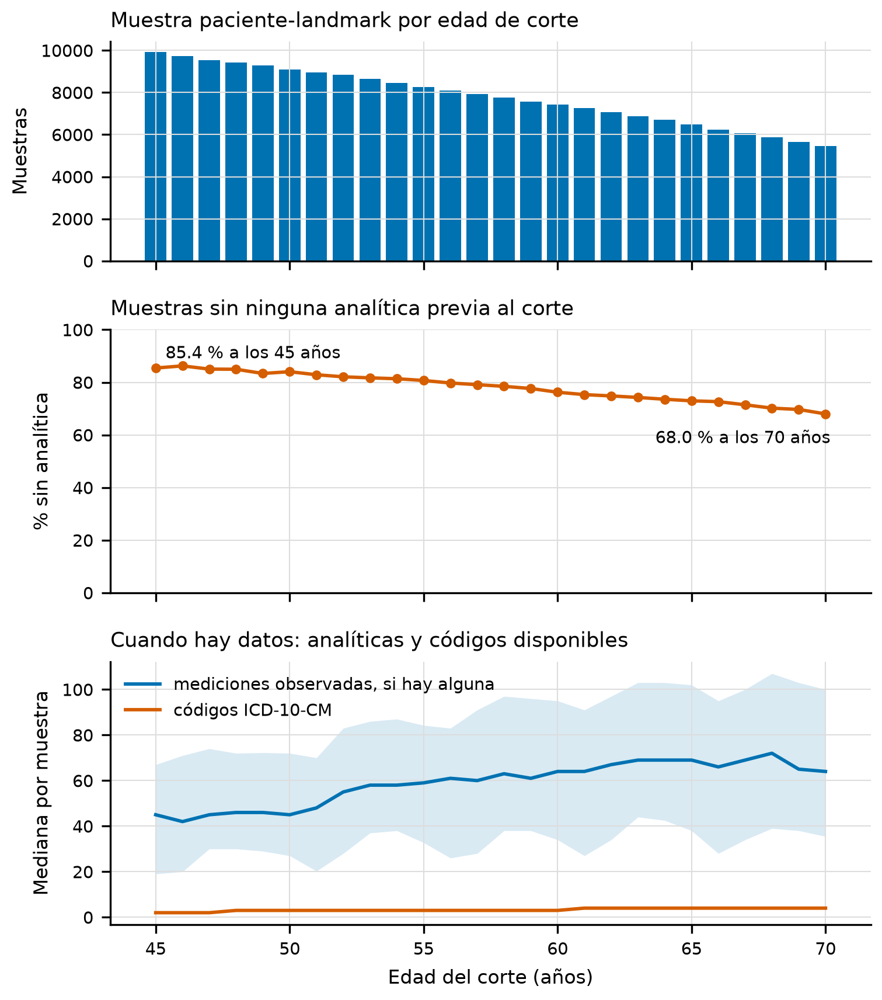
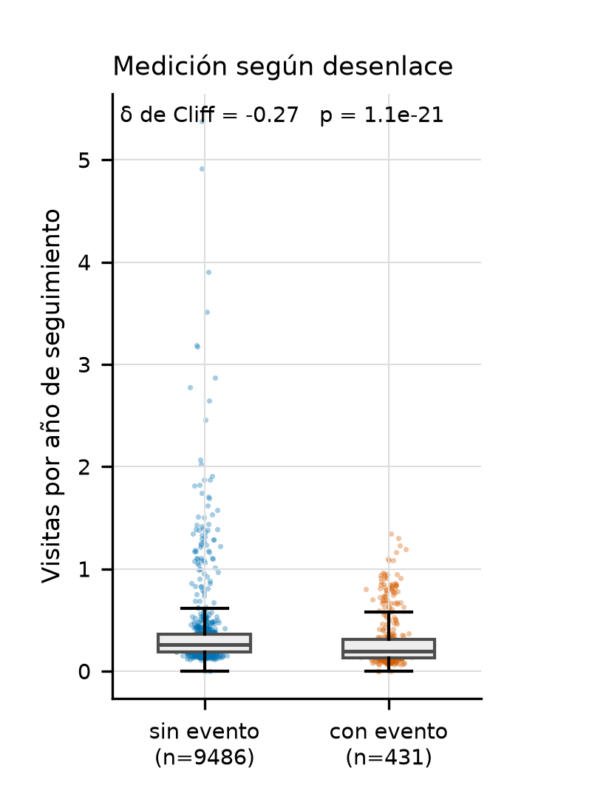
4.2.3 Densidad de observación
La Figura 11 (a) reúne la carga de cada visita, la presencia de cada analítica y la intensidad por edad. En una visita se registran 8 analíticas de mediana y 9,05 de media, con un rango de 1 a 23. La presencia se mide en dos unidades que no son intercambiables. Entre el 97,3 % y el 99,8 % de los pacientes tiene alguna vez cada analítica, pero solo entre el 13,8 % y el 82,7 % de las visitas la incluye. La primera cifra indica que casi todos los pacientes tienen cada analítica en algún momento, y la segunda, que en cada visita solo se mide una fracción de ellas. La intensidad por banda de edad crece con los años.
4.2.4 Magnitudes y normalización
La Figura 11 (b) representa, para cada analítica, la distribución de los valores estandarizados que recibe el modelo, con la media en cero y la desviación en uno como referencia. Las bandas de ±5 marcan el límite a partir del cual un valor se considera extremo.
Sobre 2 143 703 valores observados, 19 de las 23 analíticas cumplen la tolerancia de media a ±0,01 de cero y desviación a ±0,01 de uno. Cuatro quedan fuera de ella, todas por menos de tres centésimas. Son la frecuencia respiratoria (0,972), la frecuencia cardíaca (0,986), la concentración de hemoglobina corpuscular media (media 0,017 y desviación 0,987) y los leucocitos (media −0,012). Se marcan y no se corrigen, porque el z-score se ajustó en train sobre las observaciones antes del filtrado por edad y por código, y ese orden explica la diferencia.
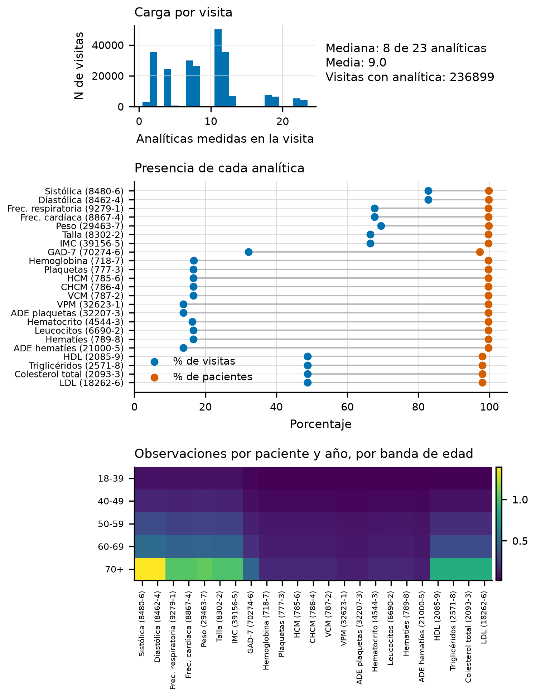
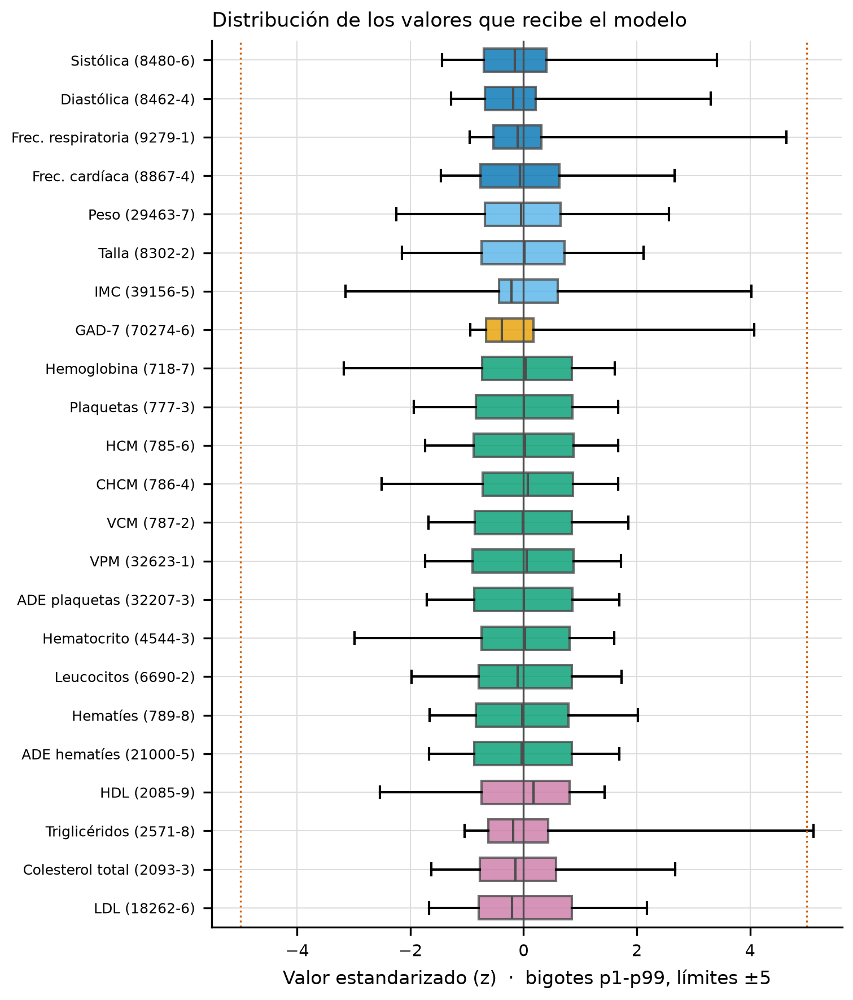
4.3 Discriminación por landmark
La Figura 12 muestra el C-index IPCW de Uno en holdout a lo largo de los 26 puntos de corte, de 45 a 70 años, con una banda de intervalo de confianza al 95 % obtenida por bootstrap de paciente en cada landmark. Los cinco modelos mejoran con la edad y ninguno lo hace de forma monótona. El retroceso del 65 es el único que comparten los cinco, y el del 50 aparece en tres de ellos.
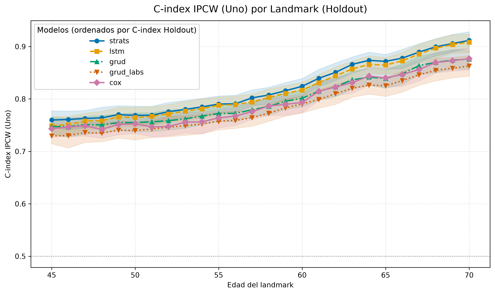
En el landmark de 45 años el C-index IPCW va de 0,728 del peor modelo a 0,750 del mejor. En el de 70 años, de 0,863 a 0,909. La Tabla 9 recoge los dos valores extremos de cada modelo.
| Modelo | Landmark 45 | Landmark 70 |
|---|---|---|
strats |
0,750 | 0,909 |
lstm |
0,745 | 0,908 |
grud |
0,738 | 0,876 |
grud_labs |
0,728 | 0,863 |
cox |
0,746 | 0,878 |
El tamaño de cada corte no depende del modelo, porque la rejilla es común, pero varía mucho con la edad: en el landmark de 45 años hay 12 616 pacientes evaluables y 618 eventos acumulados, mientras que en el de 70 quedan 6 996 pacientes y 227 eventos. No obstante, los eventos dentro del horizonte de predicción de cada landmark crecen en sentido contrario, de 55 en el horizonte a cinco años en el landmark 45 a 108 en el landmark 70, porque un paciente de 70 años tiene más probabilidad de diagnosticarse en los cinco años siguientes que uno de 45.
4.4 Utilidad frente al modelo nulo
El índice de precisión (IPA) y el Brier IPCW, definidos en el capítulo 3, miden si el modelo mejora la estimación de la incidencia y no solo el orden de los pacientes.
La Figura 13 (a) muestra el error por landmark y la Figura 13 (b) el IPA por landmark. La segunda muestra dos resultados: el IPA es positivo en la mayor parte de la rejilla para los cinco modelos, y cox es el único que cruza el cero, con valores negativos en los landmarks 48, 49, 53, 55 y 58 y un mínimo de −0,024 en el 58. Los otros cuatro se mantienen por encima de cero en toda la rejilla.
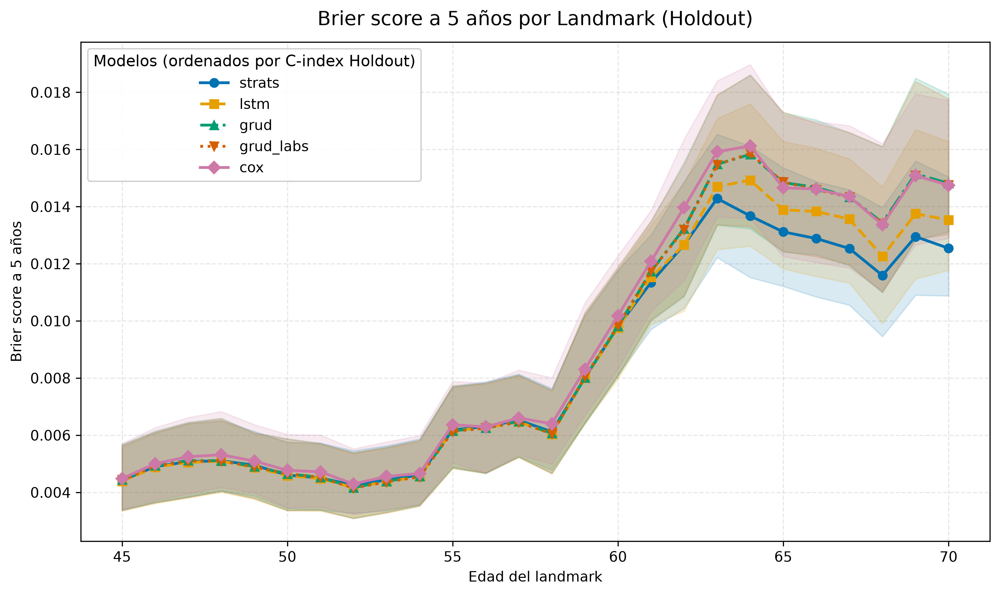
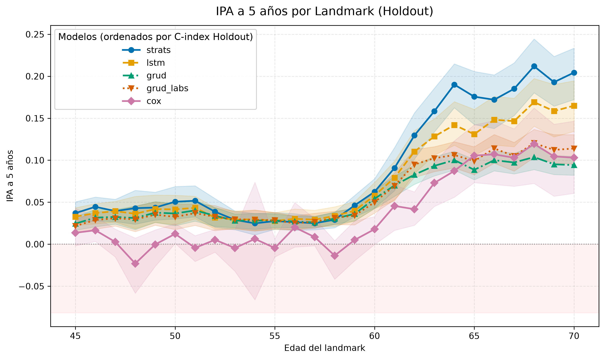
4.5 Resumen agregado por modelo
La Figura 14 reúne el resultado del estudio en tres paneles: la discriminación por landmark, la utilidad frente al nulo por landmark y los cuatro estimandos agrupados con su intervalo de confianza al 95 %. La Tabla 10 traduce el tercer panel a números.
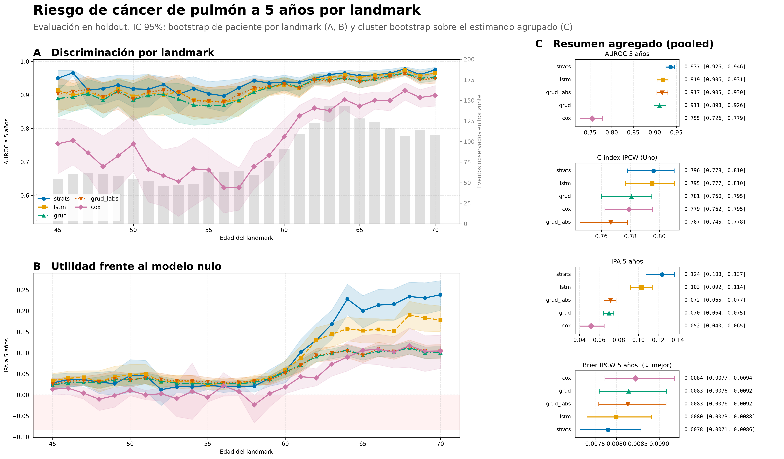
| Modelo | AUROC | C-index IPCW | IPA | Brier IPCW |
|---|---|---|---|---|
strats |
0,937 [0,926; 0,946] | 0,796 [0,778; 0,810] | 0,124 [0,108; 0,137] | 0,0078 [0,0071; 0,0086] |
lstm |
0,919 [0,906; 0,931] | 0,795 [0,777; 0,810] | 0,103 [0,092; 0,114] | 0,0080 [0,0073; 0,0088] |
grud |
0,911 [0,898; 0,926] | 0,781 [0,760; 0,795] | 0,070 [0,064; 0,075] | 0,0083 [0,0076; 0,0092] |
grud_labs |
0,917 [0,905; 0,930] | 0,767 [0,745; 0,778] | 0,072 [0,065; 0,077] | 0,0083 [0,0076; 0,0092] |
cox |
0,755 [0,726; 0,779] | 0,779 [0,762; 0,795] | 0,052 [0,040; 0,065] | 0,0084 [0,0077; 0,0094] |
En la Tabla 10 aparecen remarcados los mejores valores de cada columna, que recaen todos en strats. Los cuatro modelos secuenciales se agrupan en discriminación y cox queda por detrás en AUROC, aunque su C-index IPCW supera al de grud_labs. Los cinco intervalos del IPA excluyen el cero, de modo que todos superan al modelo nulo, mientras que los del Brier se solapan por completo y no ordenan a los modelos: con una incidencia a cinco años que no llega al 2 % en ningún corte, el error del modelo nulo ya es bajo y la cifra solo es informativa junto al IPA.
Estas cifras corresponden a la ejecución principal, la réplica 0 del apartado 3.5.4. Sus intervalos son marginales, y el solapamiento de dos de ellos no indica si la diferencia entre los modelos es significativa. El apartado 4.8 mide cuánto cambian las cifras con otras particiones y semillas y compara los modelos de forma emparejada.
4.6 Ablación de códigos ICD-10-CM
Los dos GRU-D del catálogo comparten arquitectura e hiperparámetros y solo se diferencian en que grud recibe los códigos de diagnóstico junto a las analíticas y grud_labs no. Como los instantes con diagnóstico siguen en la secuencia de las dos variantes, la comparación mide qué aporta la identidad de los códigos cuando todo lo demás está fijo, no qué aportan los diagnósticos. La Tabla 11 recoge las cuatro métricas agrupadas en holdout.
grud menos grud_labs; en Brier IPCW un valor positivo favorece a grud_labs.”
| Métrica | grud (con códigos) |
grud_labs (sin códigos) |
Diferencia |
|---|---|---|---|
| AUROC | 0,911 [0,898; 0,926] | 0,917 [0,905; 0,930] | −0,006 |
| C-index IPCW | 0,781 [0,760; 0,795] | 0,767 [0,745; 0,778] | +0,014 |
| IPA | 0,070 [0,064; 0,075] | 0,072 [0,065; 0,077] | −0,002 |
| Brier IPCW | 0,00828 [0,00760; 0,00917] | 0,00827 [0,00758; 0,00916] | +0,00001 |
En la ejecución principal, la variante con códigos gana en C-index IPCW, y la variante sin códigos tiene un AUROC y un IPA ligeramente mayores, con un Brier prácticamente idéntico. Los intervalos marginales se solapan en las cuatro métricas. La ganancia en C-index IPCW es algo mayor en train (0,795 frente a 0,778) que en holdout, un patrón compatible con un ligero sobreajuste del bloque de códigos. La comparación emparejada sobre las once réplicas (apartado 4.8) muestra que solo la ventaja en C-index IPCW es significativa.
4.7 Coste computacional
El estudio se ejecutó completo en un servidor de 64 núcleos sin GPU, con 60 asignados a Snakemake y un número fijo de hilos por trabajo, cuatro en cada entrenamiento y uno en cada evaluación. La ejecución reúne 173 trabajos, los de la ejecución principal y los de las diez réplicas de los cinco modelos, y tardó 3 h 27 min de reloj, mientras que la suma de las duraciones de todos los trabajos es de 48,8 horas. La Tabla 12 recoge la duración de cada regla en la ejecución principal.
| Regla | Modelo o split | Duración |
|---|---|---|
split_cohort |
no aplica | 1 s |
fit_lab_stats |
no aplica | 15 s |
build_sequences |
train | 2 min 05 s |
build_sequences |
validación | 49 s |
build_sequences |
holdout |
2 min 36 s |
eda |
no aplica | 17 s |
train |
cox |
4 min 41 s |
train |
grud |
5 min 29 s |
train |
lstm |
5 min 57 s |
train |
grud_labs |
10 min 37 s |
train |
strats |
1 h 49 min 31 s |
eval |
cox |
20 min 03 s |
eval |
lstm |
20 min 41 s |
eval |
grud |
20 min 55 s |
eval |
grud_labs |
20 min 59 s |
eval |
strats |
29 min 25 s |
compare |
los cinco | 4 s |
paired |
las 55 ejecuciones | 3 min 59 s |
El entrenamiento de strats marca la duración total. Es entre diez y veinte veces más largo que el de los modelos recurrentes, y los once entrenamientos del transformer, en paralelo, ocupan la mayor parte de la ejecución. Las evaluaciones duran entre 20 y 30 minutos, casi todo en el bootstrap, que es un bucle de un solo hilo, y la de strats es algo más larga porque su inferencia es más costosa. Una ejecución anterior en una máquina de ocho núcleos, sin límite de hilos por trabajo, tardó más de seis horas solo con la ejecución principal, y las evaluaciones que coincidieron en el tiempo llegaron a durar más de tres horas cada una por la contención de la CPU. Fijar los hilos de cada trabajo importa, por tanto, tanto como el número de núcleos.
4.8 Variabilidad entre réplicas y comparación emparejada
La Tabla 13 resume las once ejecuciones de cada modelo descritas en el apartado 3.5.4, cada una con su partición de discovery y su semilla, con la media, la desviación típica y el rango de los estimandos agrupados en holdout. El Brier IPCW no aparece porque, con el mismo modelo nulo, ordena las ejecuciones igual que el IPA.
| Modelo | AUROC | C-index IPCW | IPA |
|---|---|---|---|
strats |
0,936 ± 0,004 [0,930; 0,942] | 0,796 ± 0,004 [0,787; 0,801] | 0,117 ± 0,010 [0,095; 0,135] |
lstm |
0,921 ± 0,005 [0,913; 0,929] | 0,795 ± 0,003 [0,791; 0,799] | 0,092 ± 0,007 [0,085; 0,103] |
grud |
0,917 ± 0,006 [0,911; 0,928] | 0,780 ± 0,007 [0,767; 0,790] | 0,072 ± 0,003 [0,067; 0,077] |
grud_labs |
0,916 ± 0,007 [0,899; 0,924] | 0,767 ± 0,001 [0,765; 0,769] | 0,072 ± 0,003 [0,067; 0,076] |
cox |
0,752 ± 0,005 [0,745; 0,759] | 0,778 ± 0,002 [0,774; 0,780] | 0,047 ± 0,002 [0,046; 0,052] |
La ejecución principal es una de las once, y sus cifras quedan dentro de ese rango. La mayor distancia a la media es la del IPA de lstm, que en la ejecución principal es el máximo de sus réplicas (0,103 frente a 0,092 de media).
La variación entre réplicas no es despreciable. En los cuatro modelos secuenciales, la desviación típica entre réplicas vale entre 1,05 y 1,46 veces el error estándar del bootstrap en IPA y entre 0,70 y 0,99 veces en AUROC, de modo que cambiar la partición y la semilla mueve esas cifras tanto como cambiar la muestra de evaluación. En C-index IPCW la proporción queda entre 0,14 y 0,83. En cox no pasa de 0,41 en ninguna métrica, porque su pérdida es convexa en los coeficientes y la semilla apenas cambia la solución, de modo que su variación procede casi solo de la partición.
| Comparación | AUROC | C-index IPCW | IPA |
|---|---|---|---|
strats − lstm |
+0,015 [+0,001; +0,026] | +0,000 [−0,013; +0,013] | +0,025 [+0,008; +0,048] |
strats − grud |
+0,018 [+0,003; +0,033] | +0,016 [−0,005; +0,036] | +0,045 [+0,023; +0,064] |
strats − grud_labs |
+0,019 [+0,008; +0,036] | +0,029 [+0,013; +0,042] | +0,045 [+0,021; +0,065] |
strats − cox |
+0,184 [+0,162; +0,212] | +0,018 [+0,005; +0,029] | +0,070 [+0,047; +0,096] |
lstm − grud |
+0,003 [−0,012; +0,013] | +0,016 [+0,004; +0,030] | +0,020 [+0,005; +0,037] |
lstm − grud_labs |
+0,004 [−0,007; +0,033] | +0,028 [+0,018; +0,039] | +0,020 [+0,008; +0,036] |
lstm − cox |
+0,169 [+0,145; +0,198] | +0,018 [+0,008; +0,026] | +0,045 [+0,027; +0,062] |
grud − grud_labs |
+0,001 [−0,010; +0,028] | +0,013 [+0,001; +0,027] | +0,000 [−0,006; +0,008] |
grud − cox |
+0,166 [+0,139; +0,196] | +0,002 [−0,011; +0,015] | +0,025 [+0,012; +0,037] |
grud_labs − cox |
+0,164 [+0,144; +0,194] | −0,011 [−0,025; +0,003] | +0,025 [+0,012; +0,039] |
La Tabla 14 recoge las diferencias emparejadas. strats supera a cada uno de los otros cuatro modelos en AUROC y en IPA, con intervalos que excluyen el cero, y lo hace en las once réplicas. Frente a lstm, la ventaja es de 0,015 en AUROC y de 0,025 en IPA, mientras que en C-index IPCW los dos empatan. lstm supera a los dos GRU-D en C-index IPCW y en IPA, pero no en AUROC, y los tres modelos recurrentes no se distinguen entre sí en discriminación a cinco años. Todos los secuenciales superan a cox en AUROC, entre 0,16 y 0,18, y en IPA, mientras que en C-index IPCW solo strats y lstm lo superan y los dos GRU-D no se distinguen de él.
Los intervalos emparejados son mucho más estrechos que los marginales de la Tabla 10. La diferencia entre dos modelos evaluados sobre los mismos pacientes elimina el ruido de la muestra que comparten, y por eso diferencias de una o dos centésimas que los intervalos marginales no separan resultan significativas aquí.
La ablación de los códigos queda así. grud supera a grud_labs en C-index IPCW en las once réplicas, con una diferencia de 0,013 cuyo intervalo apenas excluye el cero, y no se distingue de él en AUROC ni en IPA.
Las ejecuciones, por último, son reproducibles. Todas fijan su semilla, la principal incluida, y con un número fijo de hilos el entrenamiento es determinista. En una repetición completa desde cero, las réplicas de cox, lstm, grud y grud_labs dieron las mismas cifras hasta la precisión de la máquina, y las de strats difirieron en menos de \(2 \times 10^{-5}\) de AUROC, porque esa repetición cambió el número de hilos del transformer y, con él, el orden de las sumas en coma flotante. Cualquier cifra de este capítulo puede, por tanto, regenerarse desde la configuración.
5 Discusión
Este capítulo interpreta los resultados del anterior. Se discute qué diferencias sostienen los intervalos de confianza, por qué el modelo de Cox ordena como los demás a lo largo del seguimiento y falla al ordenar dentro de los cinco años, cómo se sitúa el diseño frente al trabajo previo sobre STraTS en cáncer de pulmón, qué parte del rendimiento en los cortes tardíos procede de los datos y no del modelo, y qué aportan realmente los códigos de diagnóstico.
5.1 Análisis de la cohorte
5.1.1 Por qué la rejilla va de 45 a 70 años
La rejilla de landmarks cubre la franja de edad en la que el cribado es pertinente. A los 45 años la incidencia acumulada de diagnóstico es prácticamente cero, y a los 70 ha llegado al 4,21 % en holdout. Entre esos dos puntos se concentra el crecimiento de la curva, que pasa del 1,57 % a los 60 al 4,21 % a los 70, y es en ese intervalo donde el modelo puede distinguir a quien desarrollará la enfermedad de quien no.
El límite superior se justifica por el tamaño de la muestra. En train, el número de pacientes pasa de 9 917 en el corte de 45 a 5 458 en el de 70, casi la mitad, mientras que los eventos dentro del horizonte de cinco años dejan de crecer. En holdout pasan de 55 en el corte de 45 a 108 en el de 70, pero el máximo está en el 63, con 143, y a partir de ahí disminuyen. Más allá de 70 se pierde muestra sin ganar eventos evaluables, lo que ensancha los intervalos.
5.1.2 Lo que el modelo ve y con qué frecuencia se mide
El porcentaje de muestras sin analíticas es elevado. En el landmark 70, cerca del 68 % de las muestras del modelo no tiene ninguna analítica anterior al corte, y sin embargo el 99 % de los pacientes de train acaba teniendo alguna analítica en su historia, según Figura 11 (a) y Figura 10 (a). Ambas cifras son correctas, pero no miden lo mismo. La primera cuenta muestras, que son pares de paciente y landmark, y solo considera las analíticas anteriores al corte. La segunda cuenta pacientes a lo largo de toda su vida, incluidas las analíticas posteriores a ese corte. Como la intensidad de medición crece con la edad (Figura 11 (a)), buena parte de las analíticas se acumula en la segunda mitad del seguimiento, y casi todos los pacientes acaban teniendo alguna, pero muchos no la tenían todavía en el momento del corte. De ahí que el porcentaje de muestras sin analítica previa baje del 85,44 % en el corte de 45 al 67,99 % en el de 70.
Cuando hay analíticas, su número es elevado: la mediana condicional es de 45 mediciones en el corte de 45 y de 64 en el de 70. El modelo dispone, por tanto, de mucha historia en pocos pacientes y de ninguna en la mayoría de las muestras.
La tasa de visitas con analítica por año es menor en los pacientes con evento, con un δ de Cliff de −0,272 y un p de 1,1 × 10⁻²¹. En términos estadísticos, un paciente con evento presenta menos visitas hasta el fin de seguimiento. No obstante, este contraste está condicionado, porque el fin de seguimiento por evento se suele producir a menor edad que por otras razones y la intensidad de medición crece con la edad.
5.2 Qué diferencias soporta la evidencia y cuáles no
Los intervalos marginales de la Tabla 10 apenas separan a los modelos secuenciales. En AUROC, el de strats [0,926; 0,946] se solapa con el de lstm [0,906; 0,931] y con el de grud_labs [0,905; 0,930], y en C-index IPCW los cuatro se solapan casi por completo. Leídos así, solo el IPA separaría dos bloques, con strats y lstm por encima de los dos GRU-D. Pero el solapamiento de dos intervalos marginales no prueba que la diferencia entre ellos sea nula, porque cada intervalo incluye la variación de la muestra de evaluación, que los modelos comparten. La comparación que corresponde es la emparejada del apartado 4.8, que además incorpora la variación entre particiones y semillas.
Con esa comparación la jerarquía es nítida. strats es el mejor modelo en discriminación a cinco años y en utilidad. Supera a la LSTM en 0,015 de AUROC y 0,025 de IPA, y a los dos GRU-D en casi dos centésimas de AUROC y cuatro y media de IPA, con intervalos que excluyen el cero y en las once réplicas. La LSTM queda segunda: no se distingue de los GRU-D en AUROC, pero los supera en IPA y en C-index IPCW. Los dos GRU-D cierran el grupo de los secuenciales, y Cox queda último en AUROC y en IPA frente a todos ellos.
El C-index IPCW ordena de otra manera, y en él strats y lstm empatan. Es coherente con lo que discute el apartado siguiente: el C-index mide el orden a lo largo de todo el seguimiento, y en ese orden las dos arquitecturas son equivalentes. La ventaja del transformer está en la ventana de cinco años y en el nivel del riesgo predicho, que es lo que importa para el cribado.
El Brier, por sí solo, no permite leer estas diferencias. Un Brier de 0,008 no describe un modelo excelente, porque con una incidencia a cinco años que no llega al 2 % en ningún corte el modelo nulo ya obtiene un error parecido. Su información está en el IPA, que lo compara con ese nulo.
La variación entre réplicas, del mismo orden que la del bootstrap en AUROC e IPA, explica por qué las comparaciones con un único entrenamiento son frágiles. Una ejecución puede invertir el orden de dos modelos próximos, como ocurre en la Tabla 10 con grud y grud_labs en AUROC, y solo el emparejamiento por réplica y el bootstrap de dos niveles permiten distinguir esas inversiones de una diferencia real.
5.3 Horizonte frente a orden global
El modelo de Cox ocupa una posición aparentemente incoherente. Su C-index IPCW, 0,779, cae dentro del rango de los cuatro secuenciales y su intervalo [0,762; 0,795] se solapa con el de todos ellos, incluido el de strats. Su AUROC a cinco años, 0,755, queda más de quince centésimas por debajo del peor de los secuenciales y su intervalo [0,726; 0,779] no se solapa con ninguno. La comparación emparejada lo confirma: los secuenciales le sacan entre 0,16 y 0,18 de AUROC, mientras que en C-index IPCW los dos GRU-D no se distinguen de él. El modelo ordena como los demás y, sin embargo, apenas distingue a quién se diagnostica en los próximos cinco años.
Las dos son métricas de discriminación, y la diferencia está en los pares que compara cada una. El C-index recorre todo el seguimiento y comprueba, para cada pareja ordenable, si el de mayor riesgo se diagnostica antes, con independencia de cuándo ocurra el evento. El AUROC a cinco años se limita a la ventana y compara a los diagnosticados dentro de ella con los que siguen vivos al cerrarla. Un modelo puede ordenar correctamente a lo largo de cuarenta años y fallar en la ventana corta, como ocurre con Cox. Es un resultado conocido, porque el C-index no es una medida adecuada para evaluar riesgos a un horizonte fijo y puede premiar a un modelo que ordena bien el seguimiento completo y mal la ventana que interesa (Blanche, Kattan, y Gerds 2019). La causa no está en la forma del riesgo, porque dentro de un corte los cinco modelos producen un único escalar por paciente y los cinco suponen riesgos proporcionales desde el corte. Reside en la entrada. Cox recibe la última analítica conocida y los diagnósticos presentes, pero no cuándo ni con qué frecuencia hubo contactos recientes, y los secuenciales sí. El cribado se interesa por la ventana, y en ella el modelo solo alcanza 0,755. El Brier y el IPA, que sí dependen del nivel del riesgo y no solo de su orden, también lo sitúan el último.
Esta discrepancia no lo hace inferior en todos los aspectos. Es un modelo que ordena bien a lo largo de todo el seguimiento y mal dentro de la ventana de cinco años, y esa distinción tiene consecuencias prácticas. Para decidir a quién se le hace un seguimiento más estrecho en los próximos años hace falta el orden dentro de esa ventana, que es precisamente donde Cox falla. El IPA integra la ordenación y la magnitud de las probabilidades predichas frente a la referencia basal, situándolo en último término, si bien la contribución relativa de cada componente queda agregada en el índice.
Entre los secuenciales, el comportamiento es más homogéneo. strats y lstm combinan mejor ambos aspectos, porque destacan tanto en discriminación como en IPA, mientras que los dos GRU-D obtienen valores menores en ambos. Ninguno de los cuatro muestra el desacuerdo interno de Cox, y por tanto en ninguno se separan el orden global y el orden dentro de la ventana.
5.4 Comparación con el trabajo previo sobre STraTS en cáncer de pulmón
Las cifras de esta memoria no son directamente comparables con las de Alonso et al. (Alonso et al. 2025). Proceden de datos sintéticos y no de registros reales, el horizonte es de cinco años y no de uno, y las métricas se calculan sobre la cohorte completa con censura y no sobre una muestra de casos y controles. La comparación pertinente es de diseño, y en ella el contraste es claro.
En ese trabajo, STraTS con información temporal supera a su versión sin tiempo (0,809 frente a 0,732 de AUROC), y los autores lo atribuyen a la dinámica temporal de la historia clínica. Con el índice de los casos situado en la fecha del diagnóstico, esa ganancia es difícil de separar del sesgo temporal, porque el tiempo relativo al índice puede delatar el estudio diagnóstico que precede al cáncer (Yuan et al. 2021). En esta memoria el corte se fija por edad y es el mismo para todos, de modo que la ventaja de los modelos secuenciales no puede proceder de la proximidad al diagnóstico. Sí puede proceder del calendario de contactos anteriores al corte, una cuestión que comparten los dos trabajos y que Sección 5.6 deja abierta.
Algo parecido ocurre con la utilidad. La eficiencia de cribado, el AUPRC y la calibración tras el escalado de Platt o la regresión isotónica que reporta ese trabajo se obtienen con diez controles por caso, y describen esa mezcla y no una población. El IPA y el Brier IPCW de esta memoria se calculan con la incidencia de la cohorte, frente a un modelo nulo estimado en ella y con intervalo por bootstrap de paciente. El caso de Cox muestra además por qué un único índice de discriminación no basta, ya que el C-index puede igualar a modelos que se separan con claridad en la ventana de interés (Sección 5.3). Las réplicas del apartado 4.8 añaden un argumento más. En esta memoria, repetir el entrenamiento con otra partición y otra semilla mueve el AUROC casi tanto como remuestrear a los pacientes, y el IPA más, así que una diferencia de AUROC sin intervalo de confianza, como las que reporta ese trabajo, no basta para ordenar arquitecturas, y menos aún sin medir la variación entre entrenamientos.
Estos sesgos (el índice definido a partir del desenlace, la selección condicionada a información futura, la ausencia de censura y las métricas ligadas a la prevalencia del muestreo) son frecuentes en la predicción con datos del mundo real y limitan la evidencia que esos estudios pueden aportar (Yuan et al. 2021; Suissa 2008). La aportación de esta memoria en ese terreno no son sus cifras, que describen un generador, sino un protocolo que los evita por construcción y un transformer adaptado a ese protocolo, que podrían aplicarse sin cambios de fondo a un registro real.
5.5 El tramo en torno al landmark 60
El capítulo anterior muestra una trayectoria creciente del C-index con la edad y un tramo en torno a los 60 donde la pendiente se acentúa. El paso de 60 a 61 es el mayor incremento anual de toda la serie en lstm (+0,0151) y en cox (+0,0187), el segundo en strats (+0,0158, tras el de 62 a 63) y el tercero en grud (+0,0105).
Entre los cortes de 59 y 63, los eventos dentro del horizonte de cinco años pasan de 76 a 143 en holdout, casi el doble, mientras que el número de pacientes baja de 9 639 a 8 796. Este aumento no explica por sí solo la mejora. Más eventos reducen la varianza del estimador y estrechan el intervalo, pero no cambian su valor esperado, así que una métrica que sube de nivel necesita una causa sustantiva. Tres factores concurren en este comportamiento: el incremento de registros por paciente a edades avanzadas (la proporción sin analíticas desciende del 85,44 % en el corte de 45 al 67,99 % en el de 70), la reducción del seguimiento residual tras el corte y variaciones en el perfil etario de los casos, factores cuya interacción explica la aceleración observada en este tramo.
5.6 Qué aportan realmente los diagnósticos
La ablación de los códigos deja una sola ganancia, pequeña y en el orden a lo largo del seguimiento. grud, que recibe los códigos, supera a grud_labs en C-index IPCW en las once réplicas, con una diferencia emparejada de 0,013 cuyo intervalo [0,001; 0,027] apenas excluye el cero, y no se distingue de él en AUROC ni en IPA. En la ejecución principal la ganancia en C-index IPCW es algo mayor en train (0,795 frente a 0,778) que en holdout (0,781 frente a 0,767), un patrón compatible con un ligero sobreajuste del bloque de códigos.
Los códigos mejoran, por tanto, el orden de los pacientes a lo largo del seguimiento completo, pero no la discriminación en la ventana de cinco años ni la estimación de la incidencia, que son lo que interesa al cribado.
El resultado contradice lo esperable. El tamaño del vocabulario es la primera explicación, porque las categorías observadas en train son 119 sobre las 1 312 posibles, de modo que el canal de códigos dispone de poca señal que aprender. La segunda procede del análisis exploratorio. Si el 79,06 % de las muestras no tiene ninguna analítica previa, los diagnósticos son la única información disponible en cuatro de cada cinco muestras, y eliminar los códigos debería reducir drásticamente el rendimiento de grud_labs en esas muestras. No ocurre así, lo que deja abierta la cuestión del origen de su discriminación. La edad del corte no puede ser la respuesta, porque dentro de un corte todos los pacientes tienen la misma edad y el AUROC agregado se construye a partir del AUROC de cada corte. La explicación más probable es que grud_labs sigue recibiendo el calendario de los diagnósticos, porque los instantes de su secuencia incluyen las fechas con diagnóstico aunque no reciba los códigos, y en cada paso recibe además el tiempo desde la fecha índice. Deslindar ese efecto, junto con el peso relativo del 21 % de muestras con mediciones analíticas, requiere contrastar el rendimiento estratificando por subgrupos según la disponibilidad de pruebas de laboratorio.
La ablación está bien construida, porque mantiene fijos arquitectura e hiperparámetros y solo cambia la entrada, y por eso su resultado es informativo. Esta evaluación refleja la aportación marginal obtenida sobre el conjunto de 119 categorías presentes en la cohorte sintética, en las condiciones fijadas por el experimento y sin pretensión de extrapolarla a la práctica clínica sobre registros reales.
Los intervalos marginales de un único entrenamiento apenas separan a los modelos secuenciales. La comparación emparejada sobre once réplicas sí lo hace, y sitúa a STraTS por delante de todos en AUROC y en IPA. El resultado del estudio se sostiene, por tanto, en la discriminación a cinco años y en la utilidad frente al nulo, medidas de forma emparejada, y no en un único índice de discriminación. Cox ordena bien el seguimiento completo y mal la ventana de cinco años, y esa distinción pesa más que su posición en la tabla. Los códigos de diagnóstico aportan poco en esta cohorte, y el motivo no está resuelto. De ahí se derivan las cuestiones que aborda el capítulo siguiente: los límites del contrato común de los modelos, la naturaleza sintética de los datos, el número de réplicas en que se apoya la comparación, la ausencia de una línea base clínica y de validación externa, y el entrenamiento de STraTS sin preentrenamiento.
6 Limitaciones y trabajo futuro
Los resultados de esta memoria están sujetos a varias limitaciones. Unas proceden del código, porque el transformer no se ajusta al contrato común de los demás modelos. Otras proceden de los datos, porque la cohorte es sintética y el generador no está documentado en todos sus detalles. A esas dos se suman cuatro amenazas a la validez, y el final del capítulo recoge el trabajo que las cerraría.
6.1 Límites del contrato común de encoder ante arquitecturas no recurrentes
Los tres modelos recurrentes y la línea base de Cox comparten un mismo contrato de entrada. Cada lote llega como una tupla fija de tensores (analíticas, máscaras de observación, intervalos entre visitas, longitudes, sexo, tiempo desde la fecha índice, códigos de diagnóstico aplanados con sus desplazamientos, duraciones, eventos, edades de landmark, pesos e identificadores de paciente) y el modelo los recibe por posición. Ese contrato funciona porque los cuatro parten de la misma matriz por visita, y es lo que permite que el bucle de evaluación sea uno solo para los cuatro.
STraTS no se ajusta a él. Consume la historia como una secuencia de tripletas (instante, variable, valor), su lote tiene otra composición y su función de avance recibe argumentos por nombre en lugar de por posición. Ante esa diferencia, no se amplió el contrato común, sino que se implementó un adaptador paralelo que recopila las predicciones del transformer de forma independiente. El transformer no es incompatible con la evaluación: el adaptador devuelve la misma tupla de predicciones y las métricas se calculan con las mismas funciones para los cinco modelos. El problema es de contrato: no se pudo extender y hubo que bifurcarlo.
El coste de esa bifurcación es de mantenimiento y no afecta a la comparación: hay dos rutas de recolección que mantener sincronizadas, con el riesgo de que una corrección aplicada en una no llegue a la otra. A ello se suma un límite de la adaptación que comparten las dos familias, porque tanto los modelos recurrentes como el transformer truncan la secuencia a los 200 eventos anteriores al landmark. El efecto no es el mismo en ambos casos, porque la unidad de la secuencia no es la misma. Los recurrentes trabajan con instantes, de modo que cada posición agrupa todas las analíticas y los diagnósticos de una misma fecha, mientras que el transformer trabaja con eventos y cada posición es una medición suelta. Con el mismo tope de 200 posiciones, el transformer cubre menos tiempo clínico y atiende a una historia más corta. A eso se añade que devuelve un riesgo escalar por muestra y no una trayectoria de riesgos a lo largo del tiempo.
6.2 Límites del dato sintético
Ninguna conclusión de esta memoria describe pacientes reales. Los autores de Synthea advierten que sus registros son realistas pero no reales y que no son lo bastante ricos para la investigación clínica, y el trabajo del que proceden estos ficheros cierra su discusión diciendo que el modelo resultante no puede usarse en la asistencia real (Walonoski et al. 2018; A. Chen y Chen 2022).
Lo que sería trasladable a datos reales es la parte metodológica: el pipeline completo, el protocolo común de cohorte, rejilla de landmarks y horizonte, la maquinaria de evaluación con reponderación por censura y bootstrap, y la documentación de las decisiones de diseño. Nada de eso depende del generador.
Lo que no sería trasladable son los valores. Los cinco juegos de métricas describen el comportamiento de los modelos sobre este generador, así que no hay razón para esperar que se mantengan. La conclusión sobre los códigos de diagnóstico es el caso más claro, porque en una historia clínica real esos códigos proceden de la práctica asistencial y pueden ser mucho más informativos que en una población simulada.
Queda un límite de trazabilidad que afecta a la reproducibilidad. La versión del generador no consta ni en el artículo ni en su material complementario, así que los ficheros no pueden regenerarse con exactitud desde su descripción, y la semilla con la que se produjeron tampoco está documentada. No obstante, los datos están identificados y son los mismos que publicó el trabajo de referencia.
6.3 Amenazas a la validez
Estas son las cuatro amenazas a la validez del resultado, con la evidencia que las sostiene y lo que no permiten concluir.
6.3.1 Riesgos competitivos tratados como censura independiente
La cohorte define el evento como el primer diagnóstico de cáncer de pulmón y cierra el seguimiento por prioridad: diagnóstico, después muerte y después último contacto. Un paciente que muere sin diagnóstico queda por tanto censurado en la fecha de su muerte, y la evaluación trata esa censura como independiente del riesgo. El aparato de métricas está construido para censura a la derecha con reponderación por la inversa de la probabilidad de censura, y no incorpora ningún modelo de riesgos competitivos. La consecuencia es que las probabilidades deben leerse como riesgo de diagnóstico mientras el paciente siga vivo y en seguimiento, no como probabilidad de enfermar a lo largo de la vida.
6.3.2 Número de réplicas y alcance de la comparación emparejada
Las comparaciones entre modelos se apoyan en once réplicas, cada una con su partición de discovery y su semilla, y en un bootstrap de dos niveles con 200 iteraciones. Quedan tres límites. El componente de la réplica se estima con solo once valores, de modo que los extremos de los intervalos que dependen mucho de él, como el de la ablación de los códigos, son sensibles a añadir o quitar réplicas. El bootstrap de dos niveles trata las réplicas como intercambiables y no separa cuánto de la variación procede de la partición y cuánto de la semilla. Y todas las réplicas comparten la configuración de hiperparámetros, de modo que la comparación es entre arquitecturas con una configuración fija y no entre las mejores versiones de cada una.
6.3.3 Ausencia de línea base clínica y de validación externa
Los cinco modelos se comparan entre sí y contra un modelo nulo estadístico, pero ninguno se compara contra un modelo de riesgo clínico establecido, del tipo cuestionario estático con un puñado de predictores. Tampoco hay validación externa, ya que, aunque holdout es una población distinta de discovery, procede del mismo generador y del mismo proceso de construcción, así que mide capacidad de generalización dentro del simulador y no traslado a otra población. Es la amenaza que más acota el alcance de la comparación, porque las diferencias entre modelos pueden convivir con un rendimiento absoluto distinto en cuanto cambie la población. En este punto el trabajo de Alonso et al. (Alonso et al. 2025) tiene una ventaja clara, porque se valida sobre registros reales de tres sistemas sanitarios. La ventaja de esta memoria es de diseño (Sección 5.4), y ambas son complementarias: el protocolo aquí descrito está pensado para aplicarse a registros como los de ese estudio.
6.3.4 STraTS sin preentrenamiento autosupervisado
El transformer se entrenó desde cero y solo con la verosimilitud parcial de Cox, mientras que la arquitectura publicada se apoya en una tarea auxiliar de predicción de valores observados que se entrena primero y se afina después. El artículo distingue dos variantes en su estudio de ablación, ss- y ss+, que se refieren a los modelos entrenados sin y con autosupervisión respectivamente (Tipirneni y Reddy 2022). La adaptación conserva el codificador pero no la fase previa, así que lo que se evalúa aquí equivale a ss-, de modo que la comparación mide el rendimiento de STraTS con este pipeline y no el de STraTS en su forma publicada. Es un límite de fidelidad al método citado y, a la vez, una desventaja concreta para el transformer frente a los modelos recurrentes, que no tienen una fase equivalente.
6.4 Trabajo futuro
La mayor parte de lo anterior se traduce en líneas de trabajo concretas:
- Más réplicas y descomposición de la varianza: aumentar el número de réplicas y separar la variación debida a la partición de la debida a la semilla, por ejemplo cruzando varias semillas de entrenamiento con cada partición. Es lo que haría más estables los extremos de los intervalos emparejados y diría qué parte de la incertidumbre se reduciría con más datos de entrenamiento.
- Preentrenamiento autosupervisado de STraTS: recuperar la tarea auxiliar de predicción de valores observados del artículo original antes del ajuste con la pérdida de Cox. Es lo que permitiría comparar el transformer en las condiciones en que se propuso.
- Una línea base clínica y validación externa: añadir un modelo de riesgo establecido al catálogo, con su cuestionario estático, y repetir la evaluación sobre una cohorte real de otra procedencia. Sin ese paso, las diferencias entre arquitecturas no dicen nada sobre su utilidad en cribado.
- Riesgos competitivos: sustituir la censura por muerte por un modelo de riesgos competitivos, con la muerte por otras causas como evento que compite con el diagnóstico, y recalcular la incidencia con esa estructura. Es lo que permitiría leer las probabilidades como riesgo de enfermar a lo largo de la vida y no como riesgo mientras el paciente siga vivo y en seguimiento.
- Búsqueda de hiperparámetros y ablaciones adicionales: el protocolo fija una única configuración por modelo y una sola ablación (apartados 3.5 y 3.5.2). Una búsqueda acotada, por ejemplo de la longitud máxima de historia, y una ablación que retire también el calendario de los diagnósticos permitirían separar el efecto de la arquitectura del de la configuración y contrastar la explicación de Sección 5.6.
- Calibración y análisis de subgrupos: evaluar la calibración empírica de las probabilidades predichas frente a la incidencia observada, deslindando la contribución del orden de la del nivel de riesgo absoluto, y contrastar el rendimiento estratificando por subgrupos según la presencia de analíticas en la historia y en los distintos tramos etarios (Sección 5.5 y Sección 5.6).
A esta lista se añaden dos mejoras de ingeniería derivadas del propio análisis: unificar el contrato de recolección de predicciones para que el transformer deje de tener una ruta propia y revisar el truncamiento de historias largas, porque el recorte deja fuera la cola de las historias más largas.
7 Conclusiones
Los objetivos de Sección 1.4 pueden evaluarse con la evidencia ya presentada. Este capítulo no aporta resultados nuevos, sino el balance de qué se cumplió y con qué evidencia.
7.1 Cierre de objetivos
El marco de predicción quedó definido y se aplicó por igual a los cinco modelos. El instante de predicción es la edad de cada uno de los 26 puntos de corte, entre los 45 y los 70 años, y la historia se corta en ese instante para todos los pacientes. La censura se trata con ponderación por la inversa de su probabilidad en todas las métricas, y el filtro del apartado 3.3.3 elimina los códigos que revelan el desenlace. Ninguna de esas decisiones depende de que el paciente llegue a desarrollar el cáncer, y por eso las estimaciones no arrastran los sesgos temporales y de selección de los diseños de casos y controles (Sección 5.4).
Las tres arquitecturas secuenciales se adaptaron al análisis de tiempo hasta el evento. Todas se entrenan con la verosimilitud parcial de Cox y producen una probabilidad a cinco años a través del riesgo basal de Breslow. Cada una recibe la historia en la forma que admite su mecanismo, a partir de las mismas secuencias. STraTS adaptado a Cox obtiene los valores más altos en las cuatro métricas agrupadas, con un AUROC de 0,937 y un IPA de 0,124, y la comparación emparejada sobre once réplicas confirma su ventaja sobre cada uno de los otros modelos en AUROC y en IPA.
La comparación se hizo bajo un protocolo idéntico, sobre la misma cohorte (12 069 pacientes en train, 3 018 en validación y 15 346 en holdout), con intervalos por bootstrap agrupado y once réplicas por modelo, cada una con su partición y su semilla. Los modelos secuenciales superan a Cox dentro de la ventana de cinco años, con un AUROC entre 0,911 y 0,937 frente a 0,755, aunque su C-index IPCW sea comparable. En IPA, STraTS y la LSTM superan a los dos GRU-D con intervalos emparejados que excluyen el cero. La variación entre réplicas resultó del mismo orden que la del bootstrap en AUROC e IPA, lo que justifica haberla medido y haber comparado los modelos de forma emparejada.
La caracterización de las secuencias mostró que el 79 % de las muestras de train no tiene ninguna analítica anterior al corte, de modo que los diagnósticos son la información principal en la mayoría de ellas, y que la diferencia en la frecuencia de medición entre pacientes con y sin evento está condicionada por la edad. La ablación mostró que la identidad de los códigos mejora de forma estable el C-index IPCW de GRU-D, pero no su AUROC a cinco años ni su IPA.
El flujo de trabajo quedó construido y ejecutado de extremo a extremo. Una sola orden encadena la construcción de la cohorte, el análisis exploratorio, los entrenamientos, las evaluaciones y la comparación, y el catálogo de modelos se define en el fichero de configuración, de modo que añadir una arquitectura consiste en añadir un bloque. Todas las ejecuciones fijan su semilla, y una repetición completa desde cero reprodujo las réplicas hasta la precisión de la máquina (apartado 4.8).
7.2 Reflexión final
La principal aportación de este trabajo es un método, y las cifras que lo acompañan proceden de un generador sintético. El pipeline, el protocolo común de cohorte, rejilla y horizonte, y el aparato de evaluación con reponderación por censura y bootstrap son piezas que no dependen del generador y que podrían aplicarse a un registro real sin cambios de fondo. Los números, en cambio, describen lo que hacen estos modelos sobre estos datos, y no hay razón para esperar que se sostengan fuera de ellos.
El método tiene tres rasgos que lo distinguen de la literatura más próxima. El primero es técnico: el codificador de STraTS se adapta, hasta donde se ha podido comprobar por primera vez, a la verosimilitud parcial de Cox dentro de un esquema de landmarking, frente a su uso previo como clasificador a un año. El segundo es de diseño: el instante de predicción no depende del desenlace, la censura se trata de forma explícita y toda métrica lleva su intervalo, lo que evita los sesgos temporales y de selección que lastran buena parte de la predicción con datos del mundo real. El tercero es de evaluación: separar la discriminación a horizonte, el orden a lo largo del seguimiento y el error de predicción, y medir la variación entre entrenamientos además de la del bootstrap, evita juzgar riesgos a horizonte fijo solo con el C-index y ordenar arquitecturas con un único entrenamiento.
En lo personal, este trabajo ha supuesto un reto. El análisis de supervivencia y las series temporales irregulares quedan fuera del núcleo habitual del máster, y el marco teórico de este trabajo, junto con la orientación del tutor, me ha permitido incorporarlos y completar mi formación en un ámbito que no había trabajado antes. Ha sido gratificante comprobar que esos conocimientos sirven para algo tan concreto e importante como un cribado médico, un campo en el que el desarrollo de la inteligencia artificial puede ser de mucha utilidad a los profesionales facultativos en la labor de prevenir enfermedades.
{{< appendix >}}8 Reproducción del estudio estático de referencia y análisis de fugas
Este apéndice describe la fase inicial del proyecto, concebida como la reproducción y evaluación crítica del estudio de referencia de Chen y Chen (A. Chen y Chen 2022). En dicho trabajo se aborda la predicción del cáncer de pulmón como un problema de clasificación estático y transversal sobre datos sintéticos generados con Synthea. Aunque la memoria principal ya expone en detalle la procedencia general de la cohorte y su estructura longitudinal, resulta imprescindible documentar este experimento previo: su análisis demostró que el planteamiento estático sobre estos datos constituía un experimento vacío o nulo (null experiment), pues los patrones aprendidos por los clasificadores respondían a una severa fuga de información (data leakage) y a la forma en que el generador sintetizó las muestras, motivando el cambio metodológico radical hacia el modelado temporal y de supervivencia que articula esta memoria.
8.1 Planteamiento inicial y reproducción del modelo estático
En el enfoque propuesto por Chen y Chen, el historial clínico de cada paciente se reduce a una única fila en una tabla agregada con 765 variables que resumen diagnósticos, procedimientos, fármacos y analíticas observados hasta el momento del corte transversal. No existe, por tanto, una dimensión temporal dinámica ni una formulación de tiempo hasta el evento.
Para evaluar este enfoque, se construyó un pipeline de aprendizaje automático convencional en Python empleando scikit-learn:
from sklearn.compose import make_column_selector, ColumnTransformer
from sklearn.pipeline import Pipeline
from sklearn.preprocessing import OrdinalEncoder, StandardScaler
from sklearn.feature_selection import SelectKBest
from sklearn.impute import SimpleImputer
from sklearn.linear_model import LogisticRegressionCV
cat_pipeline = Pipeline([
("codif", OrdinalEncoder(handle_unknown='use_encoded_value', unknown_value=-1)),
("imputer", SimpleImputer(strategy="constant", fill_value=0.0, keep_empty_features=True)),
])
num_pipeline = Pipeline([
("imputer", SimpleImputer(strategy="constant", fill_value=0.0, keep_empty_features=True)),
("scaler", StandardScaler())
])
preprocesamiento = ColumnTransformer([
("cat", cat_pipeline, make_column_selector(dtype_include="object")),
("num", num_pipeline, make_column_selector(dtype_exclude="object"))
], remainder=SimpleImputer(strategy="constant", fill_value=0.0), verbose_feature_names_out=False)
seleccion = Pipeline([
("preprocesamiento", preprocesamiento),
("50mejores", SelectKBest(k=50)),
])
regresor = Pipeline([
("seleccion", seleccion),
("logistic_regression", LogisticRegressionCV(max_iter=1000, n_jobs=-1, scoring="recall", cv=5, random_state=625)),
])Al evaluar este modelo de regresión logística sobre el conjunto de prueba, se obtuvieron unas métricas de rendimiento excepcionalmente altas (Tabla 15), acompañadas de curvas ROC y de precisión-exhaustividad prácticamente perfectas (Figura 15).
| Exactitud | Sensibilidad | F1 | AUC |
|---|---|---|---|
| 0,97 | 0,95 | 0,97 | 0,986 |
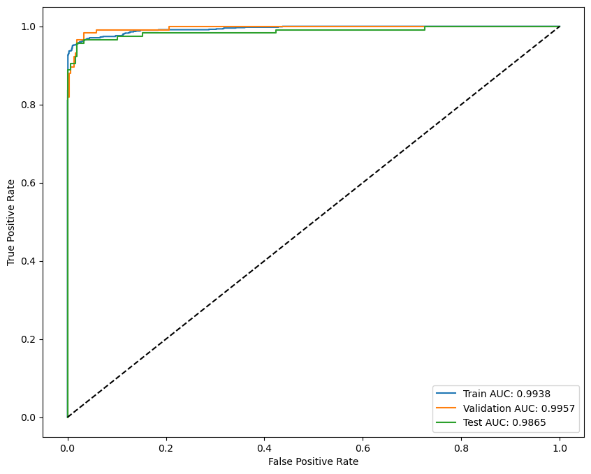
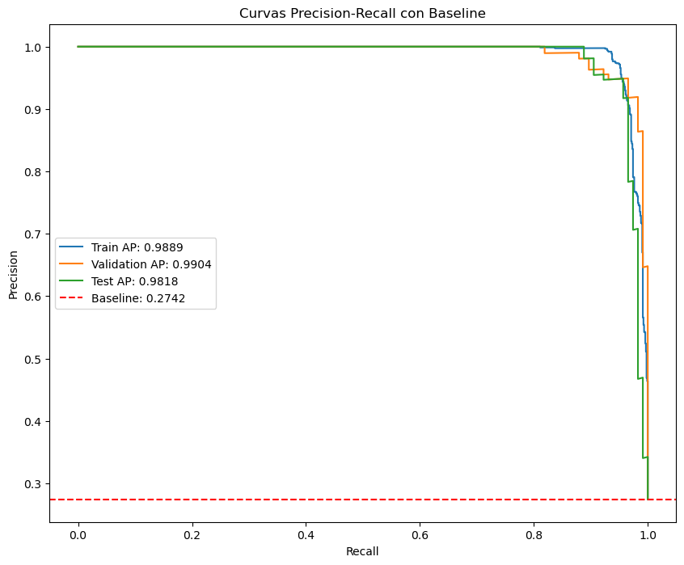
Para examinar la estabilidad de estos resultados y determinar cuántas variables eran realmente necesarias para sostener dicho rendimiento, se llevó a cabo un protocolo de validación cruzada anidada (Nested Cross-Validation). En el bucle externo (5 particiones estratificadas) se evaluó la generalización, mientras que en el interno (otras 5 particiones) se exploró el espacio de hiperparámetros mediante GridSearchCV, variando el número de características seleccionadas (\(k \in \{1, 3, 5, 10, 20, 50\}\)) y el parámetro de regularización \(C\), con el área bajo la curva PR (PR-AUC) como función objetivo. Como ilustra la Figura 16, el modelo alcanzaba una saturación casi completa con apenas 5 o 10 variables predictoras.
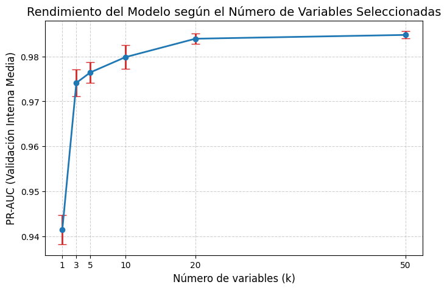
8.2 Detección de fuga de información (Data Leakage)
Alcanzar un área bajo la curva ROC de 0,986 y un F1 de 0,97 en un problema de cribado general precoz de cáncer de pulmón resulta inverosímil desde el punto de vista clínico. Estos valores suscitaron la hipótesis inmediata de que el conjunto de datos contenía una grave fuga de información (data leakage): variables predictoras que no preceden a la enfermedad como factores de riesgo, sino que son consecuencia directa de que el paciente ya ha sido diagnosticado o se encuentra bajo tratamiento oncológico.
La inspección detallada de las 765 variables confirmó esta sospecha. Se identificaron múltiples columnas que delataban explícitamente el estado de cáncer avanzado (Tabla 16), tales como C-88040-1 (Response to cancer treatment), C-59557-9 (Treatment status Cancer), C-21908-9 (Stage group.clinical Cancer), procedimientos de quimioterapia y radioterapia, citostáticos específicos (carboplatino, paclitaxel, docetaxel) o intervenciones quirúrgicas invasivas como trasplantes pulmonares. La inclusión de estas variables explicaba la aparente omnisciencia del modelo.
| Código | Descripción clínica |
|---|---|
| C-33756-8 | Polyp size greatest dimension by CAP cancer protocols |
| C-88040-1 | Response to cancer treatment |
| C-59557-9 | Treatment status Cancer |
| C-21908-9 | Stage group.clinical Cancer |
| C-85318-4 | HER2 [Presence] in Breast cancer specimen by FISH |
| C-85319-2 | HER2 [Presence] in Breast cancer specimen by Immune stain |
| C-85337-4 | Estrogen receptor Ag [Presence] in Breast cancer specimen by Immune stain |
| C-85339-0 | Progesterone receptor Ag [Presence] in Breast cancer specimen by Immune stain |
| C-21924-6 | Tumor marker Cancer |
| C-367336001 | Chemotherapy (procedure) |
| C-703423002 | Combined chemotherapy and radiation therapy |
| C-108290001 | Radiation oncology AND/OR radiotherapy |
| C-385798007 | Radiation therapy care |
| C-597195 | Carboplatin 10 MG/ML Injectable Solution |
| C-583214 | Paclitaxel 100 MG Injection |
| C-1860480 | DOCEtaxel 20 MG/ML Injection |
| C-1734919 | Cyclophosphamide 1000 MG Injection |
| C-429609002 | Lung volume reduction surgery |
| C-88039007 | Transplant of lung |
| C-232657004 | Lung Transplant |
| scc | Squamous Cell Carcinoma Antigen |
8.3 Ingeniería de características médicas sobre ontologías clínicas
Con el propósito de subsanar esta deficiencia y evaluar si era factible construir un clasificador estático legítimo y reproducible, se eliminaron todas las variables reveladoras y se rediseñó el espacio de características apoyándose en las ontologías biomédicas estándar que codifican los datos:
- Diagnósticos y procedimientos (SNOMED-CT y CIE-10): Codificados originalmente en SNOMED-CT (Ministerio de Sanidad, Gobierno de España 2026b). Para reducir la excesiva granularidad y mitigar la dispersión, se planificó agrupar conceptos por sus relaciones jerárquicas de ancestros. Debido a que las limitaciones de tasa de peticiones en la API pública de SNOMED International (SNOMED International 2026) impedían procesar las consultas ECL necesarias de forma masiva, se optó por desplegar localmente un servidor terminológico Snowstorm mediante contenedores Docker, importando e indexando íntegramente la International Edition con aproximadamente 526 000 conceptos activos. Mediante este servicio se extrajeron los ancestros ontológicos:
- Los diagnósticos (disorder y finding) se redujeron de 178 variables a 90 categorías consolidadas tras eliminar atributos con más del 99 % de nulos.
- Los procedimientos (procedure y therapy) pasaron de 186 a 123 variables.
- Adicionalmente, se utilizó el mapeo oficial de SNOMED a la Clasificación Internacional de Enfermedades (CIE-10 (Ministerio de Sanidad, Gobierno de España 2026a)), reduciendo el espacio de diagnósticos a unas 150 categorías con amplia interpretabilidad clínica.
- Medicamentos (RxNorm a ATC): Originalmente en RxNorm (U.S. National Library of Medicine 2026), cuya granularidad llega al nivel de presentación y principio activo individual (más de 200 variables). Se realizó una correspondencia cruzada hacia la clasificación Anatómica, Terapéutica y Química (ATC) de la OMS (Vademecum 2026) en su nivel 2 (Tabla 17). Esta agrupación redujo los fármacos a 43 variables que agrupan los principios activos por sistema orgánico y propiedad terapéutica (por ejemplo, antibacterianos sistémicos
J01).
| RxNorm | Nombre RxNorm | ATC nivel 5 | ATC nivel 2 | Nombre ATC nivel 2 |
|---|---|---|---|---|
| 562251 | Amoxicillin 250 MG / Clavulanate 125 MG Oral Tablet | J01CR02 | J01 | Antibacterianos para uso sistémico |
- Pruebas de laboratorio (LOINC): Estandarizadas bajo la nomenclatura LOINC (LOINC 2026), seleccionando las mediciones analíticas más frecuentes para su procesamiento numérico.
8.4 Persistencia del sesgo: el experimento nulo
Tras aplicar esta rigurosa ingeniería ontológica y haber depurado las variables explícitamente reveladoras, se entrenó un modelo gradient boosting (XGBoost) para comprobar si el rendimiento se normalizaba en rangos clínicamente realistas.
El resultado, sin embargo, volvió a ser inverosímil: el modelo alcanzó nuevamente métricas casi perfectas con un F1 de 0,99 (Tabla 18). Al analizar la importancia de variables calculada por el modelo (Tabla 19), la variable más determinante resultó ser la preparación de frotis citopatológico, acompañada por la edad y marcadores como la hipertrigliceridemia o el sodio. La citopatología actuaba de nuevo como un indicador indirecto de sospecha tumoral avanzada.
| Modelo | F1 | Precisión | Sensibilidad |
|---|---|---|---|
| XGBoost | 0,99 | 0,99 | 0,99 |
| Posición | Variable | Descripción clínica |
|---|---|---|
| 1 | Cytopathology procedure preparation of smear | Preparación de frotis para citopatología |
| 2 | age |
Edad cronológica |
| 3 | Sodium | Concentración de sodio |
| 4 | Hypertriglyceridemia (disorder) | Hipertrigliceridemia diagnosticada |
| 5 | Urine screening for glucose | Cribado de glucosa en orina |
8.4.1 Modelo exclusivo de variables de laboratorio
Ante la persistencia de sesgos en los códigos diagnósticos y procedimientos, se formuló una hipótesis adicional: evaluar si prescindiendo de toda codificación médica externa y utilizando exclusivamente analíticas de laboratorio continuas (LOINC) era posible capturar una señal biológica real sin contaminación diagnóstica.
Se preprocesaron las analíticas separando magnitudes continuas (imputadas a cero y estandarizadas) y categóricas. Se optimizaron cuatro familias algorítmicas mediante validación cruzada estratificada de 5 particiones con métrica f1_weighted: Random Forest (36 configuraciones), SVM (16 configuraciones), XGBoost y redes neuronales densas (MLPClassifier).
El mejor rendimiento en test lo obtuvo el perceptrón multicapa (MLPClassifier, Tabla 20 y Figura 17), alcanzando un F1 de 0,71 y un ROC-AUC de 0,933. Si bien estas cifras resultaban superficialmente más “plausibles” que las de los modelos previos, seguían reflejando un poder discriminante extraordinario a partir de un conjunto muy básico de analíticas generales.
| Modelo | F1 | Precisión | Sensibilidad | ROC-AUC | PR-AUC |
|---|---|---|---|---|---|
| MLPClassifier | 0,7100 | 0,7800 | 0,6600 | 0,9330 | 0,8334 |
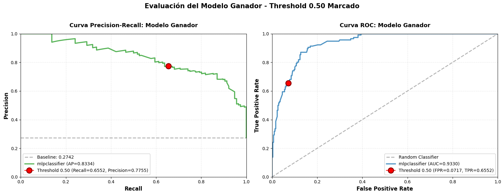
8.4.2 Modelo con diagnósticos CIE-10 y hallazgo del sesgo de síntesis
De forma complementaria, se evaluó un clasificador restringido únicamente a las ~150 variables de diagnóstico mapeadas a CIE-10 (reduciendo a las 25 características principales tras selección). La optimización arrojó un modelo SVM con métricas nuevamente exorbitantes (F1 de 0,88 y ROC-AUC de 0,981, Tabla 21 y Figura 18).
| Modelo | F1 | Precisión | Sensibilidad | ROC-AUC | PR-AUC |
|---|---|---|---|---|---|
| SVM | 0,8800 | 0,8900 | 0,8800 | 0,9807 | 0,9525 |
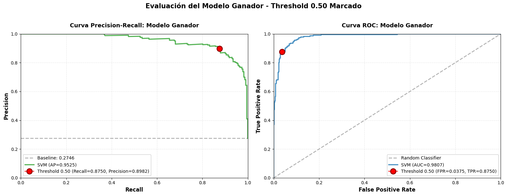
La explicación definitiva de este fenómeno se descubrió al realizar un contraste de distribuciones entre pacientes sanos y pacientes con cáncer de pulmón (Figura 19 (a)). Al modelar la prevalencia de cada diagnóstico como una variable de Bernoulli \(X_i \sim \text{Be}(p_i)\), se constató que prácticamente todas las variables diagnósticas exhibían diferencias estadísticas acusadas y artificialmente consistentes entre ambos grupos. Asimismo, cuando el modelo de laboratorio se evaluó en cohortes sintéticas independientes sin reentrenar (Figura 20 (a)), su comportamiento mostró una gran disparidad.
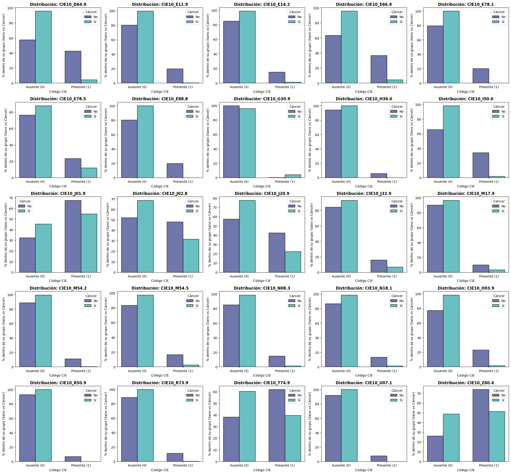
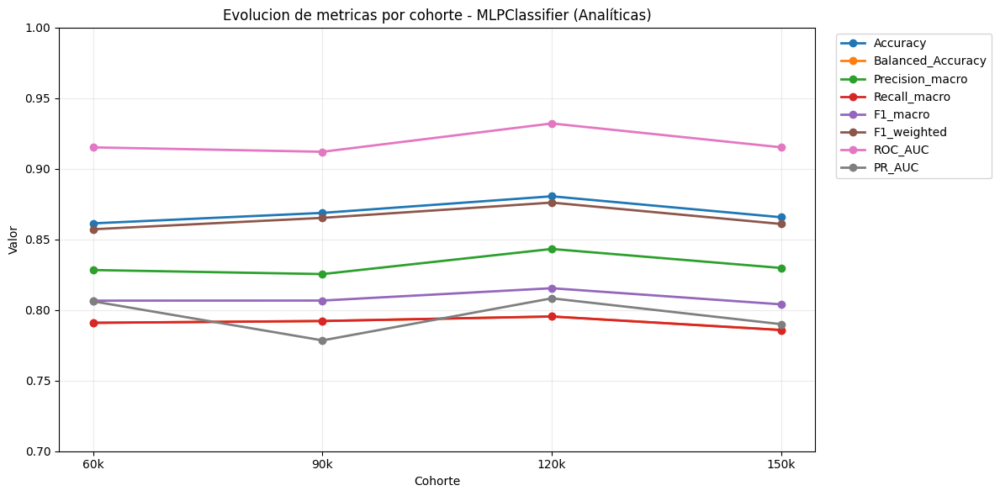
La causa de este comportamiento no residía en un patrón fisiológico de predicción temprana, sino en el método de síntesis de los datos: al sintetizar el conjunto de datos de Chen y Chen a partir de Synthea, los registros de los pacientes con cáncer de pulmón se generaron a través de trayectorias sintéticas que presentaban frecuencias de utilización del sistema sanitario, prescripciones y analíticas radicalmente distintas a las de la población control. El clasificador no predecía el riesgo biológico a futuro, sino la firma estadística artificial producida por el propio generador sintético.
8.5 Conclusión: Del experimento nulo a la formulación longitudinal
La reproducción experimental del estudio de referencia arrojó una conclusión rotunda: se trataba de un experimento vacío. Ningún refinamiento algorítmico, regularización matemática o selección de variables sobre ese corte transversal podía corregir el hecho de que el problema estaba mal formulado: 1. Había una fuga masiva de información derivada de diagnósticos y tratamientos tardíos. 2. La agregación estática colapsaba el tiempo clínico, mezclando eventos que ocurrieron años antes con pruebas realizadas días previos al diagnóstico. 3. El proceso de síntesis separaba artificialmente las cohortes de casos y controles en casi todos sus descriptores.
Este hallazgo justificó abandonar por completo la vía de la clasificación estática y replantear el Trabajo Fin de Máster desde sus bases metodológicas: - Abandonar los cortes transversales agregados y trabajar directamente sobre historias clínicas electrónicas sintéticas longitudinales completas, preservando cada visita con su fecha exacta. - Imponer un protocolo formal de landmarking, fijando instantes prospectivos de predicción basados en la edad (de 45 a 70 años) y evaluando únicamente la información acumulada antes de dicho hito. - Tratar la censura y el tiempo hasta el evento mediante análisis de supervivencia formal y verosimilitud parcial de Cox con horizonte a 5 años, eliminando el sesgo de selección de casos y controles. - Emplear arquitecturas diseñadas para series temporales clínicas irregulares (LSTM, GRU-D y transformers STraTS), cuya comparación rigurosa sobre este protocolo temporal limpio constituye el cuerpo central de la presente memoria.